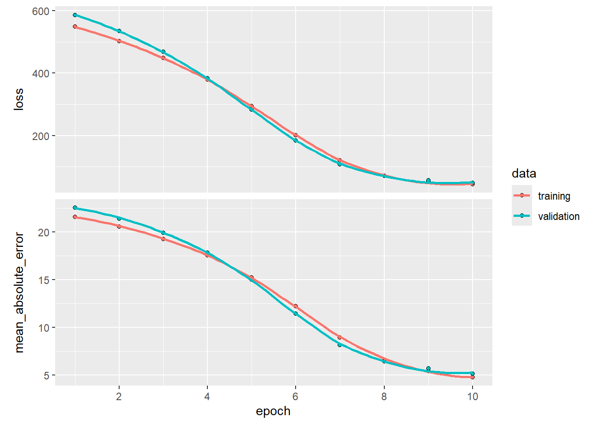

import numpy as np
import torch
import torch.nn as nn
import torch.optim as optim
from torch.utils.data import TensorDataset, DataLoader
print(f"PyTorch version: {torch.__version__}")PyTorch version: 2.10.0+cpuIn this tutorial, we will demonstrate how to use neural networks for two common tasks in deep learning (DL): regression for structured data and image classification. We will use two datasets for this purpose: the Boston Housing dataset for regression and the CIFAR-10 dataset for image classification. It is highly recommended that you use Python for this part since R does not have a very good support for DL. However, we will provide the R code for the regression part to show how you can use the keras3 package to build and train neural networks in R.
Neural networks are powerful machine learning models inspired by the human brain. Two popular frameworks for building them are:
TensorFlow has limited support on some platforms (e.g., Apple Silicon).In both frameworks, the basic workflow for building a neural network is:
Define the model architecture: Create a model and add layers to it. We can add as many layers as needed where the type of each layer can also be specified (e.g., dense, convolutional) and any necessary parameters for each layer (e.g., number of nodes, activation function).
Compile/configure the model: Specify the loss function, optimizer, and any additional metrics you want to track during training.
Train the model: Pass in your training data and any necessary hyperparameters (e.g., batch size, number of epochs). A validation set can also be specified to monitor the model’s performance during training. Additionally, there are techniques such as early stopping, which stops the training if the model’s performance on the validation set does not improve after a certain number of epochs.
Evaluate the model: After training, evaluate the model’s performance on a test set.
Use the model to make predictions: Use the trained model to make predictions on new data. This stage is also known as “inference” in DL.
import numpy as np
import torch
import torch.nn as nn
import torch.optim as optim
from torch.utils.data import TensorDataset, DataLoader
print(f"PyTorch version: {torch.__version__}")PyTorch version: 2.10.0+cpuimport numpy as np
import keras
from keras import layers
print(f"Keras version: {keras.__version__}")Keras version: 3.12.1The Boston Housing dataset is a well-known dataset used for regression tasks. It contains 506 instances and 13 features, including the median value of owner-occupied homes in $1000s. We will use this dataset to demonstrate how to perform regression on the sales price.
from keras.datasets import boston_housing
(train_x_np, train_y_np), (test_x_np, test_y_np) = boston_housing.load_data()
print(f"Train: {train_x_np.shape}, Test: {test_x_np.shape}")Train: (404, 13), Test: (102, 13)from keras.datasets import boston_housing
(train_x, train_y), (test_x, test_y) = boston_housing.load_data()
print(f"Train: {train_x.shape}, Test: {test_x.shape}")Train: (404, 13), Test: (102, 13)houses <- keras3::dataset_boston_housing()
train_x <- houses$train$x
train_y <- houses$train$y
test_x <- houses$test$x
test_y <- houses$test$yWe need to normalize the data. This is especially relevant for neural networks to stabilize the computation of the gradients and consequently improve the training process.
means_np = train_x_np.mean(axis=0)
stds_np = train_x_np.std(axis=0)
train_x_np = (train_x_np - means_np) / stds_np
test_x_np = (test_x_np - means_np) / stds_np
# Convert to PyTorch tensors
train_x_t = torch.tensor(train_x_np, dtype=torch.float32)
train_y_t = torch.tensor(train_y_np, dtype=torch.float32).unsqueeze(1)
test_x_t = torch.tensor(test_x_np, dtype=torch.float32)
test_y_t = torch.tensor(test_y_np, dtype=torch.float32).unsqueeze(1)means = train_x.mean(axis=0)
stds = train_x.std(axis=0)
train_x = (train_x - means) / stds
test_x = (test_x - means) / stdsWe will use a simple neural network with two hidden layers to perform regression.
You have many options for different hyperparameters; however, one lab session barely scratches the surface of DL and its hyperparameters. There are a couple of points that we need to specify here:
linear) to more common ones such as hyperbolic tangent or tanh (often suitable for tabular data) to more sophisticated ones such as rectified linear unit or relu (better suited to high dimensional data). What is imperative is that in the last dense layer, the number of units and the activation function determine the kind of task (e.g., classification, regression, etc.) you’re trying to accomplish. If you’re doing a regression, the last dense layer has to have 1 unit and a linear activation function. If you’re doing a binary classification (logistic regression), you still use 1 dense unit but must apply the sigmoid activation function. If you’re doing multi-class classification, then the number of dense units must equal the number of classes, and the activation function is softmax (which is a generalization of sigmoid for multiple classes). Google also provides a nice visual that explains the difference between the classification models. If you remove the >0.5 rule (i.e., sigmoid), you essentially get a linear regression for that layer.
mean squared error (mse) for regression and categorical cross-entropy for multi-class classification.As mentioned, during the ML course, we cannot cover the details of DL. If you want to understand these hyperparameters better and explore additional ones, some excellent resources include Stanford’s CS231n: Deep Learning for Computer Vision and the PyTorch tutorials.
_ = torch.manual_seed(123)
# Define the model
model_reg_pt = nn.Sequential(
nn.Linear(train_x_t.shape[1], 64),
nn.ReLU(),
nn.Linear(64, 64),
nn.ReLU(),
nn.Linear(64, 1)
)
# Define loss function and optimizer
criterion = nn.MSELoss()
optimizer_pt = optim.Adam(model_reg_pt.parameters())keras.utils.set_random_seed(123)
# Define the model
model_reg = keras.Sequential([
layers.Dense(64, activation='relu', input_shape=(train_x.shape[1],)),
layers.Dense(64, activation='relu'),
layers.Dense(1, activation='linear')
])
# Compile the model
model_reg.compile(optimizer='adam', loss='mean_squared_error', metrics=['mean_absolute_error'])
model_reg.summary()Model: "sequential"
┌─────────────────────────────────┬────────────────────────┬───────────────┐
│ Layer (type) │ Output Shape │ Param # │
├─────────────────────────────────┼────────────────────────┼───────────────┤
│ dense (Dense) │ (None, 64) │ 896 │
├─────────────────────────────────┼────────────────────────┼───────────────┤
│ dense_1 (Dense) │ (None, 64) │ 4,160 │
├─────────────────────────────────┼────────────────────────┼───────────────┤
│ dense_2 (Dense) │ (None, 1) │ 65 │
└─────────────────────────────────┴────────────────────────┴───────────────┘
Total params: 5,121 (20.00 KB)
Trainable params: 5,121 (20.00 KB)
Non-trainable params: 0 (0.00 B)keras3::set_random_seed(123)
model_reg <- keras_model_sequential(input_shape = ncol(train_x)) |>
layer_dense(units = 64, activation = "relu") |>
layer_dense(units = 64, activation = "relu") |>
layer_dense(units = 1, activation = "linear")
model_reg |> compile(
optimizer = "adam",
loss = "mean_squared_error",
metrics = c("mean_absolute_error")
)import matplotlib.pyplot as plt
# Create data loaders
train_dataset = TensorDataset(train_x_t, train_y_t)
train_loader = DataLoader(train_dataset, batch_size=32, shuffle=True)
# Training loop
loss_history = []
_ = model_reg_pt.train()
for epoch in range(10): # 300 for best results
epoch_loss = 0
for batch_x, batch_y in train_loader:
optimizer_pt.zero_grad()
pred = model_reg_pt(batch_x)
loss = criterion(pred, batch_y)
loss.backward()
optimizer_pt.step()
epoch_loss += loss.item()
avg_loss = epoch_loss / len(train_loader)
loss_history.append(avg_loss)
if (epoch + 1) % 5 == 0:
print(f"Epoch {epoch+1}, Loss: {avg_loss:.4f}")
plt.plot(loss_history);
plt.xlabel("Epoch");
plt.ylabel("Loss (MSE)");
plt.title("Training Loss");
plt.show()Epoch 5, Loss: 257.8388
Epoch 10, Loss: 36.2100
import matplotlib.pyplot as plt
history = model_reg.fit(
train_x, train_y,
epochs=10, # 300 to get the best results
batch_size=32,
validation_split=0.2,
callbacks=[keras.callbacks.EarlyStopping(patience=30, restore_best_weights=True)],
verbose=1
)
plt.plot(history.history['loss'], label='Train');
plt.plot(history.history['val_loss'], label='Validation');
plt.xlabel("Epoch");
plt.ylabel("Loss (MSE)");
plt.title("Training Loss");
plt.legend();
plt.show()Epoch 1/10
[1m 1/11[0m [32m━[0m[37m━━━━━━━━━━━━━━━━━━━[0m [1m3s[0m 363ms/step - loss: 566.7098 - mean_absolute_error: 21.7820
[1m11/11[0m [32m━━━━━━━━━━━━━━━━━━━━[0m[37m[0m [1m0s[0m 11ms/step - loss: 548.3987 - mean_absolute_error: 21.5741 - val_loss: 586.5386 - val_mean_absolute_error: 22.5123
Epoch 2/10
[1m 1/11[0m [32m━[0m[37m━━━━━━━━━━━━━━━━━━━[0m [1m0s[0m 16ms/step - loss: 517.0693 - mean_absolute_error: 20.7190
[1m11/11[0m [32m━━━━━━━━━━━━━━━━━━━━[0m[37m[0m [1m0s[0m 4ms/step - loss: 501.7396 - mean_absolute_error: 20.5227 - val_loss: 534.2108 - val_mean_absolute_error: 21.3861
Epoch 3/10
[1m 1/11[0m [32m━[0m[37m━━━━━━━━━━━━━━━━━━━[0m [1m0s[0m 16ms/step - loss: 465.5650 - mean_absolute_error: 19.5448
[1m11/11[0m [32m━━━━━━━━━━━━━━━━━━━━[0m[37m[0m [1m0s[0m 5ms/step - loss: 448.2894 - mean_absolute_error: 19.2557 - val_loss: 468.3222 - val_mean_absolute_error: 19.8879
Epoch 4/10
[1m 1/11[0m [32m━[0m[37m━━━━━━━━━━━━━━━━━━━[0m [1m0s[0m 18ms/step - loss: 401.8004 - mean_absolute_error: 18.0079
[1m11/11[0m [32m━━━━━━━━━━━━━━━━━━━━[0m[37m[0m [1m0s[0m 4ms/step - loss: 379.8379 - mean_absolute_error: 17.5461 - val_loss: 383.2387 - val_mean_absolute_error: 17.8069
Epoch 5/10
[1m 1/11[0m [32m━[0m[37m━━━━━━━━━━━━━━━━━━━[0m [1m0s[0m 17ms/step - loss: 321.5128 - mean_absolute_error: 15.8981
[1m11/11[0m [32m━━━━━━━━━━━━━━━━━━━━[0m[37m[0m [1m0s[0m 4ms/step - loss: 294.5597 - mean_absolute_error: 15.2094 - val_loss: 283.1658 - val_mean_absolute_error: 14.9977
Epoch 6/10
[1m 1/11[0m [32m━[0m[37m━━━━━━━━━━━━━━━━━━━[0m [1m0s[0m 15ms/step - loss: 227.8317 - mean_absolute_error: 13.1221
[1m11/11[0m [32m━━━━━━━━━━━━━━━━━━━━[0m[37m[0m [1m0s[0m 4ms/step - loss: 201.2679 - mean_absolute_error: 12.1951 - val_loss: 183.1437 - val_mean_absolute_error: 11.4459
Epoch 7/10
[1m 1/11[0m [32m━[0m[37m━━━━━━━━━━━━━━━━━━━[0m [1m0s[0m 16ms/step - loss: 135.8779 - mean_absolute_error: 9.7947
[1m11/11[0m [32m━━━━━━━━━━━━━━━━━━━━[0m[37m[0m [1m0s[0m 4ms/step - loss: 119.6998 - mean_absolute_error: 8.9462 - val_loss: 107.9070 - val_mean_absolute_error: 8.1430
Epoch 8/10
[1m 1/11[0m [32m━[0m[37m━━━━━━━━━━━━━━━━━━━[0m [1m0s[0m 15ms/step - loss: 68.3341 - mean_absolute_error: 6.7204
[1m11/11[0m [32m━━━━━━━━━━━━━━━━━━━━[0m[37m[0m [1m0s[0m 4ms/step - loss: 70.8525 - mean_absolute_error: 6.5915 - val_loss: 71.4134 - val_mean_absolute_error: 6.4259
Epoch 9/10
[1m 1/11[0m [32m━[0m[37m━━━━━━━━━━━━━━━━━━━[0m [1m0s[0m 17ms/step - loss: 36.8598 - mean_absolute_error: 5.2102
[1m11/11[0m [32m━━━━━━━━━━━━━━━━━━━━[0m[37m[0m [1m0s[0m 4ms/step - loss: 52.5437 - mean_absolute_error: 5.4284 - val_loss: 57.1445 - val_mean_absolute_error: 5.6849
Epoch 10/10
[1m 1/11[0m [32m━[0m[37m━━━━━━━━━━━━━━━━━━━[0m [1m0s[0m 16ms/step - loss: 25.8261 - mean_absolute_error: 4.2970
[1m11/11[0m [32m━━━━━━━━━━━━━━━━━━━━[0m[37m[0m [1m0s[0m 4ms/step - loss: 43.6421 - mean_absolute_error: 4.7666 - val_loss: 47.6434 - val_mean_absolute_error: 5.1693
history <- model_reg |> fit(
train_x, train_y,
epochs = 10, # 300 to get the best results
batch_size = 32,
validation_split = 0.2,
callbacks = callback_early_stopping(patience = 30, restore_best_weights = TRUE),
verbose = 1
)
plot(history)
Epoch 1/10
[1m 1/11[0m [32m━[0m[37m━━━━━━━━━━━━━━━━━━━[0m [1m3s[0m 331ms/step - loss: 566.7198 - mean_absolute_error: 21.7822
[1m11/11[0m [32m━━━━━━━━━━━━━━━━━━━━[0m[37m[0m [1m0s[0m 12ms/step - loss: 548.4251 - mean_absolute_error: 21.5747 - val_loss: 586.6022 - val_mean_absolute_error: 22.5136
Epoch 2/10
[1m 1/11[0m [32m━[0m[37m━━━━━━━━━━━━━━━━━━━[0m [1m0s[0m 20ms/step - loss: 517.1339 - mean_absolute_error: 20.7204
[1m11/11[0m [32m━━━━━━━━━━━━━━━━━━━━[0m[37m[0m [1m0s[0m 5ms/step - loss: 501.8156 - mean_absolute_error: 20.5244 - val_loss: 534.3273 - val_mean_absolute_error: 21.3886
Epoch 3/10
[1m 1/11[0m [32m━[0m[37m━━━━━━━━━━━━━━━━━━━[0m [1m0s[0m 28ms/step - loss: 465.6811 - mean_absolute_error: 19.5475
[1m11/11[0m [32m━━━━━━━━━━━━━━━━━━━━[0m[37m[0m [1m0s[0m 7ms/step - loss: 448.4161 - mean_absolute_error: 19.2588 - val_loss: 468.4966 - val_mean_absolute_error: 19.8920
Epoch 4/10
[1m 1/11[0m [32m━[0m[37m━━━━━━━━━━━━━━━━━━━[0m [1m0s[0m 25ms/step - loss: 401.9715 - mean_absolute_error: 18.0122
[1m11/11[0m [32m━━━━━━━━━━━━━━━━━━━━[0m[37m[0m [1m0s[0m 6ms/step - loss: 380.0186 - mean_absolute_error: 17.5507 - val_loss: 383.4724 - val_mean_absolute_error: 17.8128
Epoch 5/10
[1m 1/11[0m [32m━[0m[37m━━━━━━━━━━━━━━━━━━━[0m [1m0s[0m 29ms/step - loss: 321.7372 - mean_absolute_error: 15.9045
[1m11/11[0m [32m━━━━━━━━━━━━━━━━━━━━[0m[37m[0m [1m0s[0m 7ms/step - loss: 294.7874 - mean_absolute_error: 15.2162 - val_loss: 283.4386 - val_mean_absolute_error: 15.0061
Epoch 6/10
[1m 1/11[0m [32m━[0m[37m━━━━━━━━━━━━━━━━━━━[0m [1m1s[0m 102ms/step - loss: 228.0873 - mean_absolute_error: 13.1302
[1m11/11[0m [32m━━━━━━━━━━━━━━━━━━━━[0m[37m[0m [1m0s[0m 7ms/step - loss: 201.5058 - mean_absolute_error: 12.2035 - val_loss: 183.3969 - val_mean_absolute_error: 11.4563
Epoch 7/10
[1m 1/11[0m [32m━[0m[37m━━━━━━━━━━━━━━━━━━━[0m [1m0s[0m 29ms/step - loss: 136.1075 - mean_absolute_error: 9.8040
[1m11/11[0m [32m━━━━━━━━━━━━━━━━━━━━[0m[37m[0m [1m0s[0m 7ms/step - loss: 119.8846 - mean_absolute_error: 8.9541 - val_loss: 108.0732 - val_mean_absolute_error: 8.1505
Epoch 8/10
[1m 1/11[0m [32m━[0m[37m━━━━━━━━━━━━━━━━━━━[0m [1m0s[0m 27ms/step - loss: 68.4765 - mean_absolute_error: 6.7264
[1m11/11[0m [32m━━━━━━━━━━━━━━━━━━━━[0m[37m[0m [1m0s[0m 7ms/step - loss: 70.9415 - mean_absolute_error: 6.5963 - val_loss: 71.4844 - val_mean_absolute_error: 6.4290
Epoch 9/10
[1m 1/11[0m [32m━[0m[37m━━━━━━━━━━━━━━━━━━━[0m [1m0s[0m 80ms/step - loss: 36.9140 - mean_absolute_error: 5.2137
[1m11/11[0m [32m━━━━━━━━━━━━━━━━━━━━[0m[37m[0m [1m0s[0m 7ms/step - loss: 52.5765 - mean_absolute_error: 5.4308 - val_loss: 57.1857 - val_mean_absolute_error: 5.6866
Epoch 10/10
[1m 1/11[0m [32m━[0m[37m━━━━━━━━━━━━━━━━━━━[0m [1m1s[0m 103ms/step - loss: 25.8527 - mean_absolute_error: 4.2993
[1m11/11[0m [32m━━━━━━━━━━━━━━━━━━━━[0m[37m[0m [1m0s[0m 7ms/step - loss: 43.6699 - mean_absolute_error: 4.7684 - val_loss: 47.6769 - val_mean_absolute_error: 5.1710_ = model_reg_pt.eval()
with torch.no_grad():
preds = model_reg_pt(test_x_t)
test_mae = torch.mean(torch.abs(preds - test_y_t)).item()
test_mse = criterion(preds, test_y_t).item()
print(f"Test MSE: {test_mse:.4f}, Test MAE: {test_mae:.4f}")Test MSE: 39.6828, Test MAE: 4.8964nn_results = model_reg.evaluate(test_x, test_y)
print(f"Test Loss (MSE): {nn_results[0]:.4f}, Test MAE: {nn_results[1]:.4f}")
[1m1/4[0m [32m━━━━━[0m[37m━━━━━━━━━━━━━━━[0m [1m0s[0m 15ms/step - loss: 41.2739 - mean_absolute_error: 4.8162
[1m4/4[0m [32m━━━━━━━━━━━━━━━━━━━━[0m[37m[0m [1m0s[0m 4ms/step - loss: 44.3121 - mean_absolute_error: 5.1213
Test Loss (MSE): 44.3121, Test MAE: 5.1213nn_results <- model_reg |> evaluate(test_x, test_y)
nn_results4/4 - 0s - 5ms/step - loss: 44.3387 - mean_absolute_error: 5.1227
$loss
[1] 44.33867
$mean_absolute_error
[1] 5.122735To put these results in context, we can compare it with a simple linear regression in R:
df_tr <- data.frame(train_y, train_x)
lm_mod <- lm(train_y ~ ., data = df_tr)
lm_preds <- as.vector(predict(lm_mod, newdata=data.frame(test_x)))
caret::MAE(obs = test_y, pred = lm_preds)[1] 3.464186We see that the neural network does significantly better than a regression model. We can also compare it with the trees seen in the CART series.
[1] 3.246767The neural network also outperforms CART (if you run NN for 300 epochs). This is due to multiple reasons, including a higher complexity of the neural network (more parameters), using a validation set, and so on. You will learn about ensemble methods (bagging and boosting) in the upcoming lectures. Ensemble methods are the true champions for structured data and usually outperform neural networks for structured/low-dimensional data.
The CIFAR-10 dataset is a well-known dataset used for image classification tasks. It contains 50,000 training images and 10,000 testing images of size 32x32 pixels, each belonging to one of ten classes. We will use this dataset to demonstrate how to perform image classification.
import torchvision
import torchvision.transforms as transforms
transform = transforms.Compose([transforms.ToTensor(), transforms.Normalize((0.5,), (0.5,))])
trainset = torchvision.datasets.CIFAR10(root='./data', train=True, download=True, transform=transform)
testset = torchvision.datasets.CIFAR10(root='./data', train=False, download=True, transform=transform)
train_loader_img = DataLoader(trainset, batch_size=64, shuffle=True)
test_loader_img = DataLoader(testset, batch_size=64, shuffle=False)
# Display some sample images
classes = ('plane', 'car', 'bird', 'cat', 'deer', 'dog', 'frog', 'horse', 'ship', 'truck')
fig, axes = plt.subplots(2, 5, figsize=(10, 4))
for i, ax in enumerate(axes.flat):
img = testset[i][0].permute(1, 2, 0) * 0.5 + 0.5 # unnormalize
ax.imshow(img);
ax.set_title(classes[testset[i][1]]);
ax.axis('off');
plt.suptitle("Sample CIFAR-10 Images");
plt.tight_layout();
plt.show()
_ = torch.manual_seed(123)
model_cnn_pt = nn.Sequential(
nn.Conv2d(3, 32, 3, padding=0), nn.ReLU(), nn.MaxPool2d(2),
nn.Conv2d(32, 64, 5, padding=0), nn.ReLU(), nn.MaxPool2d(3),
nn.Conv2d(64, 64, 3, padding=0), nn.ReLU(),
nn.Flatten(),
nn.Linear(64, 64), nn.ReLU(),
nn.Linear(64, 10)
)
criterion_cnn = nn.CrossEntropyLoss()
optimizer_cnn = optim.Adam(model_cnn_pt.parameters())
for epoch in range(10):
_ = model_cnn_pt.train()
running_loss, correct_train, total_train = 0, 0, 0
for images, labels in train_loader_img:
optimizer_cnn.zero_grad()
outputs = model_cnn_pt(images)
loss = criterion_cnn(outputs, labels)
loss.backward()
optimizer_cnn.step()
running_loss += loss.item()
_, predicted = torch.max(outputs, 1)
total_train += labels.size(0)
correct_train += (predicted == labels).sum().item()
train_acc = correct_train / total_train
avg_loss = running_loss / len(train_loader_img)
print(f"Epoch {epoch+1}, Loss: {avg_loss:.4f}, Accuracy: {train_acc:.4f}")
# Evaluate
correct, total = 0, 0
_ = model_cnn_pt.eval()
with torch.no_grad():
for images, labels in test_loader_img:
outputs = model_cnn_pt(images)
_, predicted = torch.max(outputs, 1)
total += labels.size(0)
correct += (predicted == labels).sum().item()
print(f"Test Accuracy: {correct/total:.4f}")
# Show predictions on sample images
_ = model_cnn_pt.eval()
fig, axes = plt.subplots(2, 5, figsize=(10, 4))
with torch.no_grad():
for i, ax in enumerate(axes.flat):
img = testset[i][0].unsqueeze(0)
pred = model_cnn_pt(img).argmax(1).item()
true_label = testset[i][1]
img_show = testset[i][0].permute(1, 2, 0) * 0.5 + 0.5
ax.imshow(img_show);
color = 'green' if pred == true_label else 'red'
ax.set_title(f"{classes[pred]}", color=color);
ax.set_xlabel(f"({classes[true_label]})", fontsize=8);
ax.set_xticks([]); ax.set_yticks([]);
plt.suptitle("Predictions (true label in parentheses)");
plt.tight_layout();
plt.show()
Epoch 1, Loss: 1.5595, Accuracy: 0.4207
Epoch 2, Loss: 1.1944, Accuracy: 0.5734
Epoch 3, Loss: 1.0373, Accuracy: 0.6344
Epoch 4, Loss: 0.9373, Accuracy: 0.6696
Epoch 5, Loss: 0.8591, Accuracy: 0.7001
Epoch 6, Loss: 0.8064, Accuracy: 0.7193
Epoch 7, Loss: 0.7582, Accuracy: 0.7370
Epoch 8, Loss: 0.7143, Accuracy: 0.7522
Epoch 9, Loss: 0.6763, Accuracy: 0.7628
Epoch 10, Loss: 0.6430, Accuracy: 0.7754
Test Accuracy: 0.7028
(train_images, train_labels), (test_images, test_labels) = keras.datasets.cifar10.load_data()
# Normalize
train_images = train_images / 255.0
test_images = test_images / 255.0
classes = ['plane', 'car', 'bird', 'cat', 'deer', 'dog', 'frog', 'horse', 'ship', 'truck']
# Display some sample images
fig, axes = plt.subplots(2, 5, figsize=(10, 4))
for i, ax in enumerate(axes.flat):
ax.imshow(test_images[i]);
ax.set_title(classes[test_labels[i][0]]);
ax.axis('off');
plt.suptitle("Sample CIFAR-10 Images");
plt.tight_layout();
plt.show()
# One-hot encode labels
train_labels_cat = keras.utils.to_categorical(train_labels, 10)
test_labels_cat = keras.utils.to_categorical(test_labels, 10)
keras.utils.set_random_seed(123)
model_cnn = keras.Sequential([
layers.Conv2D(32, (3, 3), activation='relu', input_shape=(32, 32, 3)),
layers.MaxPooling2D((2, 2)),
layers.Conv2D(64, (5, 5), activation='relu'),
layers.MaxPooling2D((3, 3)),
layers.Conv2D(64, (3, 3), activation='relu'),
layers.Flatten(),
layers.Dense(64, activation='relu'),
layers.Dense(10, activation='softmax')
])
model_cnn.compile(optimizer='adam', loss='categorical_crossentropy', metrics=['accuracy'])
model_cnn.fit(train_images, train_labels_cat, epochs=10, batch_size=64,
validation_data=(test_images, test_labels_cat))
model_cnn.evaluate(test_images, test_labels_cat)
# Show predictions on sample images
predictions = model_cnn.predict(test_images[:10])
fig, axes = plt.subplots(2, 5, figsize=(10, 4))
for i, ax in enumerate(axes.flat):
ax.imshow(test_images[i]);
pred = predictions[i].argmax()
true_label = test_labels[i][0]
color = 'green' if pred == true_label else 'red'
ax.set_title(f"{classes[pred]}", color=color);
ax.set_xlabel(f"({classes[true_label]})", fontsize=8);
ax.set_xticks([]); ax.set_yticks([]);
plt.suptitle("Predictions (true label in parentheses)");
plt.tight_layout();
plt.show()
Epoch 1/10
[1m 1/782[0m [37m━━━━━━━━━━━━━━━━━━━━[0m [1m7:30[0m 577ms/step - accuracy: 0.0938 - loss: 2.3030
[1m 9/782[0m [37m━━━━━━━━━━━━━━━━━━━━[0m [1m5s[0m 7ms/step - accuracy: 0.1227 - loss: 2.3009
[1m 18/782[0m [37m━━━━━━━━━━━━━━━━━━━━[0m [1m4s[0m 6ms/step - accuracy: 0.1238 - loss: 2.3001
[1m 28/782[0m [37m━━━━━━━━━━━━━━━━━━━━[0m [1m4s[0m 6ms/step - accuracy: 0.1281 - loss: 2.2977
[1m 38/782[0m [37m━━━━━━━━━━━━━━━━━━━━[0m [1m4s[0m 6ms/step - accuracy: 0.1305 - loss: 2.2935
[1m 48/782[0m [32m━[0m[37m━━━━━━━━━━━━━━━━━━━[0m [1m4s[0m 6ms/step - accuracy: 0.1329 - loss: 2.2872
[1m 59/782[0m [32m━[0m[37m━━━━━━━━━━━━━━━━━━━[0m [1m3s[0m 5ms/step - accuracy: 0.1357 - loss: 2.2787
[1m 70/782[0m [32m━[0m[37m━━━━━━━━━━━━━━━━━━━[0m [1m3s[0m 5ms/step - accuracy: 0.1393 - loss: 2.2682
[1m 80/782[0m [32m━━[0m[37m━━━━━━━━━━━━━━━━━━[0m [1m3s[0m 5ms/step - accuracy: 0.1434 - loss: 2.2575
[1m 90/782[0m [32m━━[0m[37m━━━━━━━━━━━━━━━━━━[0m [1m3s[0m 5ms/step - accuracy: 0.1480 - loss: 2.2461
[1m100/782[0m [32m━━[0m[37m━━━━━━━━━━━━━━━━━━[0m [1m3s[0m 5ms/step - accuracy: 0.1527 - loss: 2.2342
[1m110/782[0m [32m━━[0m[37m━━━━━━━━━━━━━━━━━━[0m [1m3s[0m 5ms/step - accuracy: 0.1575 - loss: 2.2220
[1m121/782[0m [32m━━━[0m[37m━━━━━━━━━━━━━━━━━[0m [1m3s[0m 5ms/step - accuracy: 0.1626 - loss: 2.2089
[1m131/782[0m [32m━━━[0m[37m━━━━━━━━━━━━━━━━━[0m [1m3s[0m 5ms/step - accuracy: 0.1672 - loss: 2.1971
[1m141/782[0m [32m━━━[0m[37m━━━━━━━━━━━━━━━━━[0m [1m3s[0m 5ms/step - accuracy: 0.1716 - loss: 2.1858
[1m152/782[0m [32m━━━[0m[37m━━━━━━━━━━━━━━━━━[0m [1m3s[0m 5ms/step - accuracy: 0.1764 - loss: 2.1737
[1m162/782[0m [32m━━━━[0m[37m━━━━━━━━━━━━━━━━[0m [1m3s[0m 5ms/step - accuracy: 0.1806 - loss: 2.1632
[1m173/782[0m [32m━━━━[0m[37m━━━━━━━━━━━━━━━━[0m [1m3s[0m 5ms/step - accuracy: 0.1851 - loss: 2.1518
[1m184/782[0m [32m━━━━[0m[37m━━━━━━━━━━━━━━━━[0m [1m3s[0m 5ms/step - accuracy: 0.1895 - loss: 2.1409
[1m195/782[0m [32m━━━━[0m[37m━━━━━━━━━━━━━━━━[0m [1m3s[0m 5ms/step - accuracy: 0.1938 - loss: 2.1304
[1m206/782[0m [32m━━━━━[0m[37m━━━━━━━━━━━━━━━[0m [1m2s[0m 5ms/step - accuracy: 0.1979 - loss: 2.1203
[1m217/782[0m [32m━━━━━[0m[37m━━━━━━━━━━━━━━━[0m [1m2s[0m 5ms/step - accuracy: 0.2019 - loss: 2.1106
[1m228/782[0m [32m━━━━━[0m[37m━━━━━━━━━━━━━━━[0m [1m2s[0m 5ms/step - accuracy: 0.2057 - loss: 2.1013
[1m239/782[0m [32m━━━━━━[0m[37m━━━━━━━━━━━━━━[0m [1m2s[0m 5ms/step - accuracy: 0.2094 - loss: 2.0923
[1m249/782[0m [32m━━━━━━[0m[37m━━━━━━━━━━━━━━[0m [1m2s[0m 5ms/step - accuracy: 0.2126 - loss: 2.0844
[1m259/782[0m [32m━━━━━━[0m[37m━━━━━━━━━━━━━━[0m [1m2s[0m 5ms/step - accuracy: 0.2157 - loss: 2.0767
[1m270/782[0m [32m━━━━━━[0m[37m━━━━━━━━━━━━━━[0m [1m2s[0m 5ms/step - accuracy: 0.2191 - loss: 2.0682
[1m281/782[0m [32m━━━━━━━[0m[37m━━━━━━━━━━━━━[0m [1m2s[0m 5ms/step - accuracy: 0.2225 - loss: 2.0599
[1m291/782[0m [32m━━━━━━━[0m[37m━━━━━━━━━━━━━[0m [1m2s[0m 5ms/step - accuracy: 0.2254 - loss: 2.0526
[1m301/782[0m [32m━━━━━━━[0m[37m━━━━━━━━━━━━━[0m [1m2s[0m 5ms/step - accuracy: 0.2282 - loss: 2.0455
[1m310/782[0m [32m━━━━━━━[0m[37m━━━━━━━━━━━━━[0m [1m2s[0m 5ms/step - accuracy: 0.2307 - loss: 2.0394
[1m318/782[0m [32m━━━━━━━━[0m[37m━━━━━━━━━━━━[0m [1m2s[0m 5ms/step - accuracy: 0.2328 - loss: 2.0340
[1m327/782[0m [32m━━━━━━━━[0m[37m━━━━━━━━━━━━[0m [1m2s[0m 5ms/step - accuracy: 0.2352 - loss: 2.0281
[1m336/782[0m [32m━━━━━━━━[0m[37m━━━━━━━━━━━━[0m [1m2s[0m 5ms/step - accuracy: 0.2375 - loss: 2.0224
[1m345/782[0m [32m━━━━━━━━[0m[37m━━━━━━━━━━━━[0m [1m2s[0m 5ms/step - accuracy: 0.2397 - loss: 2.0167
[1m355/782[0m [32m━━━━━━━━━[0m[37m━━━━━━━━━━━[0m [1m2s[0m 5ms/step - accuracy: 0.2422 - loss: 2.0106
[1m365/782[0m [32m━━━━━━━━━[0m[37m━━━━━━━━━━━[0m [1m2s[0m 5ms/step - accuracy: 0.2446 - loss: 2.0046
[1m374/782[0m [32m━━━━━━━━━[0m[37m━━━━━━━━━━━[0m [1m2s[0m 5ms/step - accuracy: 0.2467 - loss: 1.9993
[1m383/782[0m [32m━━━━━━━━━[0m[37m━━━━━━━━━━━[0m [1m2s[0m 5ms/step - accuracy: 0.2487 - loss: 1.9942
[1m393/782[0m [32m━━━━━━━━━━[0m[37m━━━━━━━━━━[0m [1m2s[0m 5ms/step - accuracy: 0.2509 - loss: 1.9886
[1m402/782[0m [32m━━━━━━━━━━[0m[37m━━━━━━━━━━[0m [1m1s[0m 5ms/step - accuracy: 0.2529 - loss: 1.9837
[1m411/782[0m [32m━━━━━━━━━━[0m[37m━━━━━━━━━━[0m [1m1s[0m 5ms/step - accuracy: 0.2548 - loss: 1.9788
[1m421/782[0m [32m━━━━━━━━━━[0m[37m━━━━━━━━━━[0m [1m1s[0m 5ms/step - accuracy: 0.2569 - loss: 1.9735
[1m432/782[0m [32m━━━━━━━━━━━[0m[37m━━━━━━━━━[0m [1m1s[0m 5ms/step - accuracy: 0.2592 - loss: 1.9679
[1m442/782[0m [32m━━━━━━━━━━━[0m[37m━━━━━━━━━[0m [1m1s[0m 5ms/step - accuracy: 0.2612 - loss: 1.9628
[1m453/782[0m [32m━━━━━━━━━━━[0m[37m━━━━━━━━━[0m [1m1s[0m 5ms/step - accuracy: 0.2633 - loss: 1.9574
[1m463/782[0m [32m━━━━━━━━━━━[0m[37m━━━━━━━━━[0m [1m1s[0m 5ms/step - accuracy: 0.2652 - loss: 1.9526
[1m474/782[0m [32m━━━━━━━━━━━━[0m[37m━━━━━━━━[0m [1m1s[0m 5ms/step - accuracy: 0.2673 - loss: 1.9474
[1m485/782[0m [32m━━━━━━━━━━━━[0m[37m━━━━━━━━[0m [1m1s[0m 5ms/step - accuracy: 0.2693 - loss: 1.9424
[1m495/782[0m [32m━━━━━━━━━━━━[0m[37m━━━━━━━━[0m [1m1s[0m 5ms/step - accuracy: 0.2711 - loss: 1.9379
[1m506/782[0m [32m━━━━━━━━━━━━[0m[37m━━━━━━━━[0m [1m1s[0m 5ms/step - accuracy: 0.2731 - loss: 1.9330
[1m516/782[0m [32m━━━━━━━━━━━━━[0m[37m━━━━━━━[0m [1m1s[0m 5ms/step - accuracy: 0.2748 - loss: 1.9287
[1m526/782[0m [32m━━━━━━━━━━━━━[0m[37m━━━━━━━[0m [1m1s[0m 5ms/step - accuracy: 0.2765 - loss: 1.9245
[1m536/782[0m [32m━━━━━━━━━━━━━[0m[37m━━━━━━━[0m [1m1s[0m 5ms/step - accuracy: 0.2782 - loss: 1.9203
[1m547/782[0m [32m━━━━━━━━━━━━━[0m[37m━━━━━━━[0m [1m1s[0m 5ms/step - accuracy: 0.2800 - loss: 1.9158
[1m558/782[0m [32m━━━━━━━━━━━━━━[0m[37m━━━━━━[0m [1m1s[0m 5ms/step - accuracy: 0.2818 - loss: 1.9114
[1m569/782[0m [32m━━━━━━━━━━━━━━[0m[37m━━━━━━[0m [1m1s[0m 5ms/step - accuracy: 0.2835 - loss: 1.9071
[1m580/782[0m [32m━━━━━━━━━━━━━━[0m[37m━━━━━━[0m [1m1s[0m 5ms/step - accuracy: 0.2852 - loss: 1.9028
[1m590/782[0m [32m━━━━━━━━━━━━━━━[0m[37m━━━━━[0m [1m0s[0m 5ms/step - accuracy: 0.2868 - loss: 1.8991
[1m600/782[0m [32m━━━━━━━━━━━━━━━[0m[37m━━━━━[0m [1m0s[0m 5ms/step - accuracy: 0.2883 - loss: 1.8954
[1m611/782[0m [32m━━━━━━━━━━━━━━━[0m[37m━━━━━[0m [1m0s[0m 5ms/step - accuracy: 0.2899 - loss: 1.8914
[1m622/782[0m [32m━━━━━━━━━━━━━━━[0m[37m━━━━━[0m [1m0s[0m 5ms/step - accuracy: 0.2915 - loss: 1.8875
[1m634/782[0m [32m━━━━━━━━━━━━━━━━[0m[37m━━━━[0m [1m0s[0m 5ms/step - accuracy: 0.2932 - loss: 1.8833
[1m645/782[0m [32m━━━━━━━━━━━━━━━━[0m[37m━━━━[0m [1m0s[0m 5ms/step - accuracy: 0.2947 - loss: 1.8796
[1m656/782[0m [32m━━━━━━━━━━━━━━━━[0m[37m━━━━[0m [1m0s[0m 5ms/step - accuracy: 0.2962 - loss: 1.8759
[1m667/782[0m [32m━━━━━━━━━━━━━━━━━[0m[37m━━━[0m [1m0s[0m 5ms/step - accuracy: 0.2977 - loss: 1.8723
[1m679/782[0m [32m━━━━━━━━━━━━━━━━━[0m[37m━━━[0m [1m0s[0m 5ms/step - accuracy: 0.2992 - loss: 1.8684
[1m690/782[0m [32m━━━━━━━━━━━━━━━━━[0m[37m━━━[0m [1m0s[0m 5ms/step - accuracy: 0.3007 - loss: 1.8649
[1m701/782[0m [32m━━━━━━━━━━━━━━━━━[0m[37m━━━[0m [1m0s[0m 5ms/step - accuracy: 0.3021 - loss: 1.8615
[1m712/782[0m [32m━━━━━━━━━━━━━━━━━━[0m[37m━━[0m [1m0s[0m 5ms/step - accuracy: 0.3034 - loss: 1.8581
[1m723/782[0m [32m━━━━━━━━━━━━━━━━━━[0m[37m━━[0m [1m0s[0m 5ms/step - accuracy: 0.3048 - loss: 1.8548
[1m735/782[0m [32m━━━━━━━━━━━━━━━━━━[0m[37m━━[0m [1m0s[0m 5ms/step - accuracy: 0.3062 - loss: 1.8512
[1m746/782[0m [32m━━━━━━━━━━━━━━━━━━━[0m[37m━[0m [1m0s[0m 5ms/step - accuracy: 0.3076 - loss: 1.8479
[1m757/782[0m [32m━━━━━━━━━━━━━━━━━━━[0m[37m━[0m [1m0s[0m 5ms/step - accuracy: 0.3089 - loss: 1.8448
[1m769/782[0m [32m━━━━━━━━━━━━━━━━━━━[0m[37m━[0m [1m0s[0m 5ms/step - accuracy: 0.3103 - loss: 1.8413
[1m780/782[0m [32m━━━━━━━━━━━━━━━━━━━[0m[37m━[0m [1m0s[0m 5ms/step - accuracy: 0.3115 - loss: 1.8382
[1m782/782[0m [32m━━━━━━━━━━━━━━━━━━━━[0m[37m[0m [1m5s[0m 6ms/step - accuracy: 0.4010 - loss: 1.6185 - val_accuracy: 0.4926 - val_loss: 1.4559
Epoch 2/10
[1m 1/782[0m [37m━━━━━━━━━━━━━━━━━━━━[0m [1m20s[0m 26ms/step - accuracy: 0.5312 - loss: 1.3719
[1m 12/782[0m [37m━━━━━━━━━━━━━━━━━━━━[0m [1m3s[0m 5ms/step - accuracy: 0.5200 - loss: 1.3896
[1m 23/782[0m [37m━━━━━━━━━━━━━━━━━━━━[0m [1m3s[0m 5ms/step - accuracy: 0.5141 - loss: 1.3950
[1m 34/782[0m [37m━━━━━━━━━━━━━━━━━━━━[0m [1m3s[0m 5ms/step - accuracy: 0.5102 - loss: 1.3936
[1m 44/782[0m [32m━[0m[37m━━━━━━━━━━━━━━━━━━━[0m [1m3s[0m 5ms/step - accuracy: 0.5078 - loss: 1.3929
[1m 55/782[0m [32m━[0m[37m━━━━━━━━━━━━━━━━━━━[0m [1m3s[0m 5ms/step - accuracy: 0.5055 - loss: 1.3935
[1m 66/782[0m [32m━[0m[37m━━━━━━━━━━━━━━━━━━━[0m [1m3s[0m 5ms/step - accuracy: 0.5045 - loss: 1.3917
[1m 78/782[0m [32m━[0m[37m━━━━━━━━━━━━━━━━━━━[0m [1m3s[0m 5ms/step - accuracy: 0.5037 - loss: 1.3901
[1m 89/782[0m [32m━━[0m[37m━━━━━━━━━━━━━━━━━━[0m [1m3s[0m 5ms/step - accuracy: 0.5035 - loss: 1.3882
[1m100/782[0m [32m━━[0m[37m━━━━━━━━━━━━━━━━━━[0m [1m3s[0m 5ms/step - accuracy: 0.5034 - loss: 1.3862
[1m111/782[0m [32m━━[0m[37m━━━━━━━━━━━━━━━━━━[0m [1m3s[0m 5ms/step - accuracy: 0.5036 - loss: 1.3839
[1m122/782[0m [32m━━━[0m[37m━━━━━━━━━━━━━━━━━[0m [1m3s[0m 5ms/step - accuracy: 0.5038 - loss: 1.3819
[1m132/782[0m [32m━━━[0m[37m━━━━━━━━━━━━━━━━━[0m [1m3s[0m 5ms/step - accuracy: 0.5040 - loss: 1.3804
[1m142/782[0m [32m━━━[0m[37m━━━━━━━━━━━━━━━━━[0m [1m3s[0m 5ms/step - accuracy: 0.5043 - loss: 1.3790
[1m153/782[0m [32m━━━[0m[37m━━━━━━━━━━━━━━━━━[0m [1m3s[0m 5ms/step - accuracy: 0.5046 - loss: 1.3778
[1m164/782[0m [32m━━━━[0m[37m━━━━━━━━━━━━━━━━[0m [1m2s[0m 5ms/step - accuracy: 0.5049 - loss: 1.3767
[1m175/782[0m [32m━━━━[0m[37m━━━━━━━━━━━━━━━━[0m [1m2s[0m 5ms/step - accuracy: 0.5054 - loss: 1.3754
[1m186/782[0m [32m━━━━[0m[37m━━━━━━━━━━━━━━━━[0m [1m2s[0m 5ms/step - accuracy: 0.5058 - loss: 1.3743
[1m196/782[0m [32m━━━━━[0m[37m━━━━━━━━━━━━━━━[0m [1m2s[0m 5ms/step - accuracy: 0.5063 - loss: 1.3732
[1m207/782[0m [32m━━━━━[0m[37m━━━━━━━━━━━━━━━[0m [1m2s[0m 5ms/step - accuracy: 0.5068 - loss: 1.3721
[1m218/782[0m [32m━━━━━[0m[37m━━━━━━━━━━━━━━━[0m [1m2s[0m 5ms/step - accuracy: 0.5072 - loss: 1.3710
[1m229/782[0m [32m━━━━━[0m[37m━━━━━━━━━━━━━━━[0m [1m2s[0m 5ms/step - accuracy: 0.5077 - loss: 1.3699
[1m240/782[0m [32m━━━━━━[0m[37m━━━━━━━━━━━━━━[0m [1m2s[0m 5ms/step - accuracy: 0.5081 - loss: 1.3689
[1m250/782[0m [32m━━━━━━[0m[37m━━━━━━━━━━━━━━[0m [1m2s[0m 5ms/step - accuracy: 0.5084 - loss: 1.3681
[1m261/782[0m [32m━━━━━━[0m[37m━━━━━━━━━━━━━━[0m [1m2s[0m 5ms/step - accuracy: 0.5088 - loss: 1.3671
[1m272/782[0m [32m━━━━━━[0m[37m━━━━━━━━━━━━━━[0m [1m2s[0m 5ms/step - accuracy: 0.5092 - loss: 1.3660
[1m283/782[0m [32m━━━━━━━[0m[37m━━━━━━━━━━━━━[0m [1m2s[0m 5ms/step - accuracy: 0.5096 - loss: 1.3649
[1m294/782[0m [32m━━━━━━━[0m[37m━━━━━━━━━━━━━[0m [1m2s[0m 5ms/step - accuracy: 0.5100 - loss: 1.3638
[1m305/782[0m [32m━━━━━━━[0m[37m━━━━━━━━━━━━━[0m [1m2s[0m 5ms/step - accuracy: 0.5103 - loss: 1.3628
[1m316/782[0m [32m━━━━━━━━[0m[37m━━━━━━━━━━━━[0m [1m2s[0m 5ms/step - accuracy: 0.5107 - loss: 1.3618
[1m327/782[0m [32m━━━━━━━━[0m[37m━━━━━━━━━━━━[0m [1m2s[0m 5ms/step - accuracy: 0.5111 - loss: 1.3609
[1m338/782[0m [32m━━━━━━━━[0m[37m━━━━━━━━━━━━[0m [1m2s[0m 5ms/step - accuracy: 0.5114 - loss: 1.3599
[1m349/782[0m [32m━━━━━━━━[0m[37m━━━━━━━━━━━━[0m [1m2s[0m 5ms/step - accuracy: 0.5118 - loss: 1.3590
[1m359/782[0m [32m━━━━━━━━━[0m[37m━━━━━━━━━━━[0m [1m2s[0m 5ms/step - accuracy: 0.5120 - loss: 1.3582
[1m370/782[0m [32m━━━━━━━━━[0m[37m━━━━━━━━━━━[0m [1m1s[0m 5ms/step - accuracy: 0.5124 - loss: 1.3573
[1m380/782[0m [32m━━━━━━━━━[0m[37m━━━━━━━━━━━[0m [1m1s[0m 5ms/step - accuracy: 0.5126 - loss: 1.3565
[1m391/782[0m [32m━━━━━━━━━━[0m[37m━━━━━━━━━━[0m [1m1s[0m 5ms/step - accuracy: 0.5129 - loss: 1.3556
[1m402/782[0m [32m━━━━━━━━━━[0m[37m━━━━━━━━━━[0m [1m1s[0m 5ms/step - accuracy: 0.5132 - loss: 1.3547
[1m413/782[0m [32m━━━━━━━━━━[0m[37m━━━━━━━━━━[0m [1m1s[0m 5ms/step - accuracy: 0.5135 - loss: 1.3538
[1m425/782[0m [32m━━━━━━━━━━[0m[37m━━━━━━━━━━[0m [1m1s[0m 5ms/step - accuracy: 0.5138 - loss: 1.3528
[1m436/782[0m [32m━━━━━━━━━━━[0m[37m━━━━━━━━━[0m [1m1s[0m 5ms/step - accuracy: 0.5141 - loss: 1.3519
[1m447/782[0m [32m━━━━━━━━━━━[0m[37m━━━━━━━━━[0m [1m1s[0m 5ms/step - accuracy: 0.5144 - loss: 1.3510
[1m458/782[0m [32m━━━━━━━━━━━[0m[37m━━━━━━━━━[0m [1m1s[0m 5ms/step - accuracy: 0.5147 - loss: 1.3501
[1m469/782[0m [32m━━━━━━━━━━━[0m[37m━━━━━━━━━[0m [1m1s[0m 5ms/step - accuracy: 0.5150 - loss: 1.3493
[1m480/782[0m [32m━━━━━━━━━━━━[0m[37m━━━━━━━━[0m [1m1s[0m 5ms/step - accuracy: 0.5153 - loss: 1.3485
[1m491/782[0m [32m━━━━━━━━━━━━[0m[37m━━━━━━━━[0m [1m1s[0m 5ms/step - accuracy: 0.5156 - loss: 1.3476
[1m503/782[0m [32m━━━━━━━━━━━━[0m[37m━━━━━━━━[0m [1m1s[0m 5ms/step - accuracy: 0.5159 - loss: 1.3467
[1m515/782[0m [32m━━━━━━━━━━━━━[0m[37m━━━━━━━[0m [1m1s[0m 5ms/step - accuracy: 0.5162 - loss: 1.3459
[1m526/782[0m [32m━━━━━━━━━━━━━[0m[37m━━━━━━━[0m [1m1s[0m 5ms/step - accuracy: 0.5165 - loss: 1.3451
[1m537/782[0m [32m━━━━━━━━━━━━━[0m[37m━━━━━━━[0m [1m1s[0m 5ms/step - accuracy: 0.5167 - loss: 1.3443
[1m548/782[0m [32m━━━━━━━━━━━━━━[0m[37m━━━━━━[0m [1m1s[0m 5ms/step - accuracy: 0.5170 - loss: 1.3435
[1m559/782[0m [32m━━━━━━━━━━━━━━[0m[37m━━━━━━[0m [1m1s[0m 5ms/step - accuracy: 0.5173 - loss: 1.3428
[1m570/782[0m [32m━━━━━━━━━━━━━━[0m[37m━━━━━━[0m [1m1s[0m 5ms/step - accuracy: 0.5176 - loss: 1.3420
[1m579/782[0m [32m━━━━━━━━━━━━━━[0m[37m━━━━━━[0m [1m0s[0m 5ms/step - accuracy: 0.5178 - loss: 1.3414
[1m590/782[0m [32m━━━━━━━━━━━━━━━[0m[37m━━━━━[0m [1m0s[0m 5ms/step - accuracy: 0.5181 - loss: 1.3407
[1m602/782[0m [32m━━━━━━━━━━━━━━━[0m[37m━━━━━[0m [1m0s[0m 5ms/step - accuracy: 0.5183 - loss: 1.3400
[1m614/782[0m [32m━━━━━━━━━━━━━━━[0m[37m━━━━━[0m [1m0s[0m 5ms/step - accuracy: 0.5186 - loss: 1.3392
[1m626/782[0m [32m━━━━━━━━━━━━━━━━[0m[37m━━━━[0m [1m0s[0m 5ms/step - accuracy: 0.5189 - loss: 1.3385
[1m637/782[0m [32m━━━━━━━━━━━━━━━━[0m[37m━━━━[0m [1m0s[0m 5ms/step - accuracy: 0.5191 - loss: 1.3379
[1m649/782[0m [32m━━━━━━━━━━━━━━━━[0m[37m━━━━[0m [1m0s[0m 5ms/step - accuracy: 0.5194 - loss: 1.3372
[1m661/782[0m [32m━━━━━━━━━━━━━━━━[0m[37m━━━━[0m [1m0s[0m 5ms/step - accuracy: 0.5196 - loss: 1.3366
[1m673/782[0m [32m━━━━━━━━━━━━━━━━━[0m[37m━━━[0m [1m0s[0m 5ms/step - accuracy: 0.5199 - loss: 1.3359
[1m685/782[0m [32m━━━━━━━━━━━━━━━━━[0m[37m━━━[0m [1m0s[0m 5ms/step - accuracy: 0.5201 - loss: 1.3352
[1m697/782[0m [32m━━━━━━━━━━━━━━━━━[0m[37m━━━[0m [1m0s[0m 5ms/step - accuracy: 0.5204 - loss: 1.3346
[1m709/782[0m [32m━━━━━━━━━━━━━━━━━━[0m[37m━━[0m [1m0s[0m 5ms/step - accuracy: 0.5206 - loss: 1.3339
[1m721/782[0m [32m━━━━━━━━━━━━━━━━━━[0m[37m━━[0m [1m0s[0m 5ms/step - accuracy: 0.5209 - loss: 1.3332
[1m733/782[0m [32m━━━━━━━━━━━━━━━━━━[0m[37m━━[0m [1m0s[0m 5ms/step - accuracy: 0.5211 - loss: 1.3325
[1m743/782[0m [32m━━━━━━━━━━━━━━━━━━━[0m[37m━[0m [1m0s[0m 5ms/step - accuracy: 0.5213 - loss: 1.3320
[1m753/782[0m [32m━━━━━━━━━━━━━━━━━━━[0m[37m━[0m [1m0s[0m 5ms/step - accuracy: 0.5215 - loss: 1.3314
[1m763/782[0m [32m━━━━━━━━━━━━━━━━━━━[0m[37m━[0m [1m0s[0m 5ms/step - accuracy: 0.5217 - loss: 1.3309
[1m774/782[0m [32m━━━━━━━━━━━━━━━━━━━[0m[37m━[0m [1m0s[0m 5ms/step - accuracy: 0.5220 - loss: 1.3302
[1m782/782[0m [32m━━━━━━━━━━━━━━━━━━━━[0m[37m[0m [1m4s[0m 5ms/step - accuracy: 0.5383 - loss: 1.2860 - val_accuracy: 0.5818 - val_loss: 1.1779
Epoch 3/10
[1m 1/782[0m [37m━━━━━━━━━━━━━━━━━━━━[0m [1m19s[0m 25ms/step - accuracy: 0.6875 - loss: 1.0634
[1m 13/782[0m [37m━━━━━━━━━━━━━━━━━━━━[0m [1m3s[0m 5ms/step - accuracy: 0.5878 - loss: 1.1797
[1m 25/782[0m [37m━━━━━━━━━━━━━━━━━━━━[0m [1m3s[0m 4ms/step - accuracy: 0.5812 - loss: 1.1939
[1m 37/782[0m [37m━━━━━━━━━━━━━━━━━━━━[0m [1m3s[0m 4ms/step - accuracy: 0.5813 - loss: 1.1933
[1m 48/782[0m [32m━[0m[37m━━━━━━━━━━━━━━━━━━━[0m [1m3s[0m 4ms/step - accuracy: 0.5800 - loss: 1.1948
[1m 59/782[0m [32m━[0m[37m━━━━━━━━━━━━━━━━━━━[0m [1m3s[0m 5ms/step - accuracy: 0.5792 - loss: 1.1957
[1m 69/782[0m [32m━[0m[37m━━━━━━━━━━━━━━━━━━━[0m [1m3s[0m 5ms/step - accuracy: 0.5793 - loss: 1.1945
[1m 79/782[0m [32m━━[0m[37m━━━━━━━━━━━━━━━━━━[0m [1m3s[0m 5ms/step - accuracy: 0.5791 - loss: 1.1941
[1m 90/782[0m [32m━━[0m[37m━━━━━━━━━━━━━━━━━━[0m [1m3s[0m 5ms/step - accuracy: 0.5790 - loss: 1.1930
[1m101/782[0m [32m━━[0m[37m━━━━━━━━━━━━━━━━━━[0m [1m3s[0m 5ms/step - accuracy: 0.5790 - loss: 1.1921
[1m111/782[0m [32m━━[0m[37m━━━━━━━━━━━━━━━━━━[0m [1m3s[0m 5ms/step - accuracy: 0.5791 - loss: 1.1909
[1m121/782[0m [32m━━━[0m[37m━━━━━━━━━━━━━━━━━[0m [1m3s[0m 5ms/step - accuracy: 0.5792 - loss: 1.1898
[1m131/782[0m [32m━━━[0m[37m━━━━━━━━━━━━━━━━━[0m [1m3s[0m 5ms/step - accuracy: 0.5794 - loss: 1.1890
[1m141/782[0m [32m━━━[0m[37m━━━━━━━━━━━━━━━━━[0m [1m3s[0m 5ms/step - accuracy: 0.5794 - loss: 1.1885
[1m151/782[0m [32m━━━[0m[37m━━━━━━━━━━━━━━━━━[0m [1m3s[0m 5ms/step - accuracy: 0.5794 - loss: 1.1883
[1m161/782[0m [32m━━━━[0m[37m━━━━━━━━━━━━━━━━[0m [1m3s[0m 5ms/step - accuracy: 0.5793 - loss: 1.1882
[1m171/782[0m [32m━━━━[0m[37m━━━━━━━━━━━━━━━━[0m [1m2s[0m 5ms/step - accuracy: 0.5793 - loss: 1.1879
[1m181/782[0m [32m━━━━[0m[37m━━━━━━━━━━━━━━━━[0m [1m2s[0m 5ms/step - accuracy: 0.5793 - loss: 1.1877
[1m191/782[0m [32m━━━━[0m[37m━━━━━━━━━━━━━━━━[0m [1m2s[0m 5ms/step - accuracy: 0.5793 - loss: 1.1876
[1m201/782[0m [32m━━━━━[0m[37m━━━━━━━━━━━━━━━[0m [1m2s[0m 5ms/step - accuracy: 0.5793 - loss: 1.1873
[1m211/782[0m [32m━━━━━[0m[37m━━━━━━━━━━━━━━━[0m [1m2s[0m 5ms/step - accuracy: 0.5794 - loss: 1.1871
[1m221/782[0m [32m━━━━━[0m[37m━━━━━━━━━━━━━━━[0m [1m2s[0m 5ms/step - accuracy: 0.5794 - loss: 1.1869
[1m232/782[0m [32m━━━━━[0m[37m━━━━━━━━━━━━━━━[0m [1m2s[0m 5ms/step - accuracy: 0.5795 - loss: 1.1866
[1m243/782[0m [32m━━━━━━[0m[37m━━━━━━━━━━━━━━[0m [1m2s[0m 5ms/step - accuracy: 0.5795 - loss: 1.1864
[1m254/782[0m [32m━━━━━━[0m[37m━━━━━━━━━━━━━━[0m [1m2s[0m 5ms/step - accuracy: 0.5795 - loss: 1.1861
[1m263/782[0m [32m━━━━━━[0m[37m━━━━━━━━━━━━━━[0m [1m2s[0m 5ms/step - accuracy: 0.5796 - loss: 1.1858
[1m273/782[0m [32m━━━━━━[0m[37m━━━━━━━━━━━━━━[0m [1m2s[0m 5ms/step - accuracy: 0.5797 - loss: 1.1853
[1m284/782[0m [32m━━━━━━━[0m[37m━━━━━━━━━━━━━[0m [1m2s[0m 5ms/step - accuracy: 0.5798 - loss: 1.1847
[1m294/782[0m [32m━━━━━━━[0m[37m━━━━━━━━━━━━━[0m [1m2s[0m 5ms/step - accuracy: 0.5800 - loss: 1.1842
[1m304/782[0m [32m━━━━━━━[0m[37m━━━━━━━━━━━━━[0m [1m2s[0m 5ms/step - accuracy: 0.5801 - loss: 1.1837
[1m314/782[0m [32m━━━━━━━━[0m[37m━━━━━━━━━━━━[0m [1m2s[0m 5ms/step - accuracy: 0.5803 - loss: 1.1833
[1m324/782[0m [32m━━━━━━━━[0m[37m━━━━━━━━━━━━[0m [1m2s[0m 5ms/step - accuracy: 0.5804 - loss: 1.1828
[1m334/782[0m [32m━━━━━━━━[0m[37m━━━━━━━━━━━━[0m [1m2s[0m 5ms/step - accuracy: 0.5805 - loss: 1.1824
[1m344/782[0m [32m━━━━━━━━[0m[37m━━━━━━━━━━━━[0m [1m2s[0m 5ms/step - accuracy: 0.5806 - loss: 1.1821
[1m354/782[0m [32m━━━━━━━━━[0m[37m━━━━━━━━━━━[0m [1m2s[0m 5ms/step - accuracy: 0.5807 - loss: 1.1817
[1m364/782[0m [32m━━━━━━━━━[0m[37m━━━━━━━━━━━[0m [1m2s[0m 5ms/step - accuracy: 0.5808 - loss: 1.1813
[1m374/782[0m [32m━━━━━━━━━[0m[37m━━━━━━━━━━━[0m [1m2s[0m 5ms/step - accuracy: 0.5809 - loss: 1.1809
[1m385/782[0m [32m━━━━━━━━━[0m[37m━━━━━━━━━━━[0m [1m2s[0m 5ms/step - accuracy: 0.5811 - loss: 1.1805
[1m395/782[0m [32m━━━━━━━━━━[0m[37m━━━━━━━━━━[0m [1m1s[0m 5ms/step - accuracy: 0.5811 - loss: 1.1801
[1m405/782[0m [32m━━━━━━━━━━[0m[37m━━━━━━━━━━[0m [1m1s[0m 5ms/step - accuracy: 0.5812 - loss: 1.1797
[1m415/782[0m [32m━━━━━━━━━━[0m[37m━━━━━━━━━━[0m [1m1s[0m 5ms/step - accuracy: 0.5813 - loss: 1.1793
[1m426/782[0m [32m━━━━━━━━━━[0m[37m━━━━━━━━━━[0m [1m1s[0m 5ms/step - accuracy: 0.5815 - loss: 1.1789
[1m437/782[0m [32m━━━━━━━━━━━[0m[37m━━━━━━━━━[0m [1m1s[0m 5ms/step - accuracy: 0.5816 - loss: 1.1784
[1m448/782[0m [32m━━━━━━━━━━━[0m[37m━━━━━━━━━[0m [1m1s[0m 5ms/step - accuracy: 0.5817 - loss: 1.1780
[1m459/782[0m [32m━━━━━━━━━━━[0m[37m━━━━━━━━━[0m [1m1s[0m 5ms/step - accuracy: 0.5818 - loss: 1.1775
[1m470/782[0m [32m━━━━━━━━━━━━[0m[37m━━━━━━━━[0m [1m1s[0m 5ms/step - accuracy: 0.5820 - loss: 1.1771
[1m481/782[0m [32m━━━━━━━━━━━━[0m[37m━━━━━━━━[0m [1m1s[0m 5ms/step - accuracy: 0.5821 - loss: 1.1766
[1m492/782[0m [32m━━━━━━━━━━━━[0m[37m━━━━━━━━[0m [1m1s[0m 5ms/step - accuracy: 0.5822 - loss: 1.1762
[1m502/782[0m [32m━━━━━━━━━━━━[0m[37m━━━━━━━━[0m [1m1s[0m 5ms/step - accuracy: 0.5823 - loss: 1.1758
[1m512/782[0m [32m━━━━━━━━━━━━━[0m[37m━━━━━━━[0m [1m1s[0m 5ms/step - accuracy: 0.5825 - loss: 1.1754
[1m522/782[0m [32m━━━━━━━━━━━━━[0m[37m━━━━━━━[0m [1m1s[0m 5ms/step - accuracy: 0.5826 - loss: 1.1750
[1m533/782[0m [32m━━━━━━━━━━━━━[0m[37m━━━━━━━[0m [1m1s[0m 5ms/step - accuracy: 0.5827 - loss: 1.1746
[1m544/782[0m [32m━━━━━━━━━━━━━[0m[37m━━━━━━━[0m [1m1s[0m 5ms/step - accuracy: 0.5829 - loss: 1.1742
[1m554/782[0m [32m━━━━━━━━━━━━━━[0m[37m━━━━━━[0m [1m1s[0m 5ms/step - accuracy: 0.5830 - loss: 1.1739
[1m565/782[0m [32m━━━━━━━━━━━━━━[0m[37m━━━━━━[0m [1m1s[0m 5ms/step - accuracy: 0.5831 - loss: 1.1735
[1m576/782[0m [32m━━━━━━━━━━━━━━[0m[37m━━━━━━[0m [1m1s[0m 5ms/step - accuracy: 0.5832 - loss: 1.1732
[1m587/782[0m [32m━━━━━━━━━━━━━━━[0m[37m━━━━━[0m [1m0s[0m 5ms/step - accuracy: 0.5834 - loss: 1.1728
[1m598/782[0m [32m━━━━━━━━━━━━━━━[0m[37m━━━━━[0m [1m0s[0m 5ms/step - accuracy: 0.5835 - loss: 1.1725
[1m609/782[0m [32m━━━━━━━━━━━━━━━[0m[37m━━━━━[0m [1m0s[0m 5ms/step - accuracy: 0.5836 - loss: 1.1722
[1m619/782[0m [32m━━━━━━━━━━━━━━━[0m[37m━━━━━[0m [1m0s[0m 5ms/step - accuracy: 0.5837 - loss: 1.1719
[1m629/782[0m [32m━━━━━━━━━━━━━━━━[0m[37m━━━━[0m [1m0s[0m 5ms/step - accuracy: 0.5838 - loss: 1.1717
[1m639/782[0m [32m━━━━━━━━━━━━━━━━[0m[37m━━━━[0m [1m0s[0m 5ms/step - accuracy: 0.5839 - loss: 1.1714
[1m649/782[0m [32m━━━━━━━━━━━━━━━━[0m[37m━━━━[0m [1m0s[0m 5ms/step - accuracy: 0.5840 - loss: 1.1712
[1m659/782[0m [32m━━━━━━━━━━━━━━━━[0m[37m━━━━[0m [1m0s[0m 5ms/step - accuracy: 0.5841 - loss: 1.1710
[1m669/782[0m [32m━━━━━━━━━━━━━━━━━[0m[37m━━━[0m [1m0s[0m 5ms/step - accuracy: 0.5842 - loss: 1.1707
[1m679/782[0m [32m━━━━━━━━━━━━━━━━━[0m[37m━━━[0m [1m0s[0m 5ms/step - accuracy: 0.5843 - loss: 1.1705
[1m690/782[0m [32m━━━━━━━━━━━━━━━━━[0m[37m━━━[0m [1m0s[0m 5ms/step - accuracy: 0.5844 - loss: 1.1702
[1m701/782[0m [32m━━━━━━━━━━━━━━━━━[0m[37m━━━[0m [1m0s[0m 5ms/step - accuracy: 0.5845 - loss: 1.1699
[1m712/782[0m [32m━━━━━━━━━━━━━━━━━━[0m[37m━━[0m [1m0s[0m 5ms/step - accuracy: 0.5846 - loss: 1.1696
[1m723/782[0m [32m━━━━━━━━━━━━━━━━━━[0m[37m━━[0m [1m0s[0m 5ms/step - accuracy: 0.5847 - loss: 1.1693
[1m733/782[0m [32m━━━━━━━━━━━━━━━━━━[0m[37m━━[0m [1m0s[0m 5ms/step - accuracy: 0.5848 - loss: 1.1690
[1m744/782[0m [32m━━━━━━━━━━━━━━━━━━━[0m[37m━[0m [1m0s[0m 5ms/step - accuracy: 0.5849 - loss: 1.1687
[1m754/782[0m [32m━━━━━━━━━━━━━━━━━━━[0m[37m━[0m [1m0s[0m 5ms/step - accuracy: 0.5850 - loss: 1.1684
[1m764/782[0m [32m━━━━━━━━━━━━━━━━━━━[0m[37m━[0m [1m0s[0m 5ms/step - accuracy: 0.5851 - loss: 1.1681
[1m775/782[0m [32m━━━━━━━━━━━━━━━━━━━[0m[37m━[0m [1m0s[0m 5ms/step - accuracy: 0.5852 - loss: 1.1678
[1m782/782[0m [32m━━━━━━━━━━━━━━━━━━━━[0m[37m[0m [1m4s[0m 6ms/step - accuracy: 0.5935 - loss: 1.1456 - val_accuracy: 0.6075 - val_loss: 1.1105
Epoch 4/10
[1m 1/782[0m [37m━━━━━━━━━━━━━━━━━━━━[0m [1m21s[0m 27ms/step - accuracy: 0.7031 - loss: 0.9245
[1m 11/782[0m [37m━━━━━━━━━━━━━━━━━━━━[0m [1m4s[0m 5ms/step - accuracy: 0.6302 - loss: 1.0697
[1m 22/782[0m [37m━━━━━━━━━━━━━━━━━━━━[0m [1m3s[0m 5ms/step - accuracy: 0.6256 - loss: 1.0885
[1m 33/782[0m [37m━━━━━━━━━━━━━━━━━━━━[0m [1m3s[0m 5ms/step - accuracy: 0.6258 - loss: 1.0867
[1m 44/782[0m [32m━[0m[37m━━━━━━━━━━━━━━━━━━━[0m [1m3s[0m 5ms/step - accuracy: 0.6247 - loss: 1.0876
[1m 55/782[0m [32m━[0m[37m━━━━━━━━━━━━━━━━━━━[0m [1m3s[0m 5ms/step - accuracy: 0.6225 - loss: 1.0906
[1m 66/782[0m [32m━[0m[37m━━━━━━━━━━━━━━━━━━━[0m [1m3s[0m 5ms/step - accuracy: 0.6213 - loss: 1.0907
[1m 77/782[0m [32m━[0m[37m━━━━━━━━━━━━━━━━━━━[0m [1m3s[0m 5ms/step - accuracy: 0.6206 - loss: 1.0910
[1m 88/782[0m [32m━━[0m[37m━━━━━━━━━━━━━━━━━━[0m [1m3s[0m 5ms/step - accuracy: 0.6201 - loss: 1.0906
[1m 99/782[0m [32m━━[0m[37m━━━━━━━━━━━━━━━━━━[0m [1m3s[0m 5ms/step - accuracy: 0.6197 - loss: 1.0902
[1m110/782[0m [32m━━[0m[37m━━━━━━━━━━━━━━━━━━[0m [1m3s[0m 5ms/step - accuracy: 0.6195 - loss: 1.0892
[1m121/782[0m [32m━━━[0m[37m━━━━━━━━━━━━━━━━━[0m [1m3s[0m 5ms/step - accuracy: 0.6192 - loss: 1.0884
[1m132/782[0m [32m━━━[0m[37m━━━━━━━━━━━━━━━━━[0m [1m3s[0m 5ms/step - accuracy: 0.6188 - loss: 1.0879
[1m143/782[0m [32m━━━[0m[37m━━━━━━━━━━━━━━━━━[0m [1m3s[0m 5ms/step - accuracy: 0.6185 - loss: 1.0878
[1m154/782[0m [32m━━━[0m[37m━━━━━━━━━━━━━━━━━[0m [1m3s[0m 5ms/step - accuracy: 0.6181 - loss: 1.0878
[1m165/782[0m [32m━━━━[0m[37m━━━━━━━━━━━━━━━━[0m [1m2s[0m 5ms/step - accuracy: 0.6178 - loss: 1.0878
[1m176/782[0m [32m━━━━[0m[37m━━━━━━━━━━━━━━━━[0m [1m2s[0m 5ms/step - accuracy: 0.6177 - loss: 1.0876
[1m187/782[0m [32m━━━━[0m[37m━━━━━━━━━━━━━━━━[0m [1m2s[0m 5ms/step - accuracy: 0.6175 - loss: 1.0874
[1m198/782[0m [32m━━━━━[0m[37m━━━━━━━━━━━━━━━[0m [1m2s[0m 5ms/step - accuracy: 0.6175 - loss: 1.0872
[1m209/782[0m [32m━━━━━[0m[37m━━━━━━━━━━━━━━━[0m [1m2s[0m 5ms/step - accuracy: 0.6176 - loss: 1.0869
[1m219/782[0m [32m━━━━━[0m[37m━━━━━━━━━━━━━━━[0m [1m2s[0m 5ms/step - accuracy: 0.6176 - loss: 1.0867
[1m229/782[0m [32m━━━━━[0m[37m━━━━━━━━━━━━━━━[0m [1m2s[0m 5ms/step - accuracy: 0.6177 - loss: 1.0864
[1m239/782[0m [32m━━━━━━[0m[37m━━━━━━━━━━━━━━[0m [1m2s[0m 5ms/step - accuracy: 0.6177 - loss: 1.0862
[1m250/782[0m [32m━━━━━━[0m[37m━━━━━━━━━━━━━━[0m [1m2s[0m 5ms/step - accuracy: 0.6178 - loss: 1.0860
[1m260/782[0m [32m━━━━━━[0m[37m━━━━━━━━━━━━━━[0m [1m2s[0m 5ms/step - accuracy: 0.6178 - loss: 1.0857
[1m271/782[0m [32m━━━━━━[0m[37m━━━━━━━━━━━━━━[0m [1m2s[0m 5ms/step - accuracy: 0.6179 - loss: 1.0853
[1m282/782[0m [32m━━━━━━━[0m[37m━━━━━━━━━━━━━[0m [1m2s[0m 5ms/step - accuracy: 0.6181 - loss: 1.0848
[1m293/782[0m [32m━━━━━━━[0m[37m━━━━━━━━━━━━━[0m [1m2s[0m 5ms/step - accuracy: 0.6182 - loss: 1.0843
[1m304/782[0m [32m━━━━━━━[0m[37m━━━━━━━━━━━━━[0m [1m2s[0m 5ms/step - accuracy: 0.6184 - loss: 1.0839
[1m315/782[0m [32m━━━━━━━━[0m[37m━━━━━━━━━━━━[0m [1m2s[0m 5ms/step - accuracy: 0.6185 - loss: 1.0835
[1m325/782[0m [32m━━━━━━━━[0m[37m━━━━━━━━━━━━[0m [1m2s[0m 5ms/step - accuracy: 0.6186 - loss: 1.0831
[1m335/782[0m [32m━━━━━━━━[0m[37m━━━━━━━━━━━━[0m [1m2s[0m 5ms/step - accuracy: 0.6187 - loss: 1.0828
[1m345/782[0m [32m━━━━━━━━[0m[37m━━━━━━━━━━━━[0m [1m2s[0m 5ms/step - accuracy: 0.6188 - loss: 1.0825
[1m355/782[0m [32m━━━━━━━━━[0m[37m━━━━━━━━━━━[0m [1m2s[0m 5ms/step - accuracy: 0.6189 - loss: 1.0822
[1m366/782[0m [32m━━━━━━━━━[0m[37m━━━━━━━━━━━[0m [1m2s[0m 5ms/step - accuracy: 0.6190 - loss: 1.0819
[1m376/782[0m [32m━━━━━━━━━[0m[37m━━━━━━━━━━━[0m [1m2s[0m 5ms/step - accuracy: 0.6190 - loss: 1.0817
[1m387/782[0m [32m━━━━━━━━━[0m[37m━━━━━━━━━━━[0m [1m1s[0m 5ms/step - accuracy: 0.6191 - loss: 1.0813
[1m398/782[0m [32m━━━━━━━━━━[0m[37m━━━━━━━━━━[0m [1m1s[0m 5ms/step - accuracy: 0.6192 - loss: 1.0810
[1m409/782[0m [32m━━━━━━━━━━[0m[37m━━━━━━━━━━[0m [1m1s[0m 5ms/step - accuracy: 0.6193 - loss: 1.0806
[1m420/782[0m [32m━━━━━━━━━━[0m[37m━━━━━━━━━━[0m [1m1s[0m 5ms/step - accuracy: 0.6195 - loss: 1.0802
[1m431/782[0m [32m━━━━━━━━━━━[0m[37m━━━━━━━━━[0m [1m1s[0m 5ms/step - accuracy: 0.6196 - loss: 1.0799
[1m442/782[0m [32m━━━━━━━━━━━[0m[37m━━━━━━━━━[0m [1m1s[0m 5ms/step - accuracy: 0.6197 - loss: 1.0796
[1m452/782[0m [32m━━━━━━━━━━━[0m[37m━━━━━━━━━[0m [1m1s[0m 5ms/step - accuracy: 0.6197 - loss: 1.0793
[1m462/782[0m [32m━━━━━━━━━━━[0m[37m━━━━━━━━━[0m [1m1s[0m 5ms/step - accuracy: 0.6198 - loss: 1.0790
[1m473/782[0m [32m━━━━━━━━━━━━[0m[37m━━━━━━━━[0m [1m1s[0m 5ms/step - accuracy: 0.6199 - loss: 1.0787
[1m484/782[0m [32m━━━━━━━━━━━━[0m[37m━━━━━━━━[0m [1m1s[0m 5ms/step - accuracy: 0.6200 - loss: 1.0784
[1m495/782[0m [32m━━━━━━━━━━━━[0m[37m━━━━━━━━[0m [1m1s[0m 5ms/step - accuracy: 0.6200 - loss: 1.0781
[1m506/782[0m [32m━━━━━━━━━━━━[0m[37m━━━━━━━━[0m [1m1s[0m 5ms/step - accuracy: 0.6201 - loss: 1.0778
[1m517/782[0m [32m━━━━━━━━━━━━━[0m[37m━━━━━━━[0m [1m1s[0m 5ms/step - accuracy: 0.6202 - loss: 1.0775
[1m528/782[0m [32m━━━━━━━━━━━━━[0m[37m━━━━━━━[0m [1m1s[0m 5ms/step - accuracy: 0.6202 - loss: 1.0773
[1m538/782[0m [32m━━━━━━━━━━━━━[0m[37m━━━━━━━[0m [1m1s[0m 5ms/step - accuracy: 0.6203 - loss: 1.0771
[1m549/782[0m [32m━━━━━━━━━━━━━━[0m[37m━━━━━━[0m [1m1s[0m 5ms/step - accuracy: 0.6203 - loss: 1.0768
[1m560/782[0m [32m━━━━━━━━━━━━━━[0m[37m━━━━━━[0m [1m1s[0m 5ms/step - accuracy: 0.6204 - loss: 1.0766
[1m571/782[0m [32m━━━━━━━━━━━━━━[0m[37m━━━━━━[0m [1m1s[0m 5ms/step - accuracy: 0.6205 - loss: 1.0764
[1m582/782[0m [32m━━━━━━━━━━━━━━[0m[37m━━━━━━[0m [1m0s[0m 5ms/step - accuracy: 0.6205 - loss: 1.0762
[1m592/782[0m [32m━━━━━━━━━━━━━━━[0m[37m━━━━━[0m [1m0s[0m 5ms/step - accuracy: 0.6206 - loss: 1.0760
[1m603/782[0m [32m━━━━━━━━━━━━━━━[0m[37m━━━━━[0m [1m0s[0m 5ms/step - accuracy: 0.6207 - loss: 1.0758
[1m613/782[0m [32m━━━━━━━━━━━━━━━[0m[37m━━━━━[0m [1m0s[0m 5ms/step - accuracy: 0.6207 - loss: 1.0757
[1m623/782[0m [32m━━━━━━━━━━━━━━━[0m[37m━━━━━[0m [1m0s[0m 5ms/step - accuracy: 0.6208 - loss: 1.0755
[1m633/782[0m [32m━━━━━━━━━━━━━━━━[0m[37m━━━━[0m [1m0s[0m 5ms/step - accuracy: 0.6209 - loss: 1.0754
[1m643/782[0m [32m━━━━━━━━━━━━━━━━[0m[37m━━━━[0m [1m0s[0m 5ms/step - accuracy: 0.6209 - loss: 1.0752
[1m654/782[0m [32m━━━━━━━━━━━━━━━━[0m[37m━━━━[0m [1m0s[0m 5ms/step - accuracy: 0.6210 - loss: 1.0751
[1m664/782[0m [32m━━━━━━━━━━━━━━━━[0m[37m━━━━[0m [1m0s[0m 5ms/step - accuracy: 0.6210 - loss: 1.0750
[1m674/782[0m [32m━━━━━━━━━━━━━━━━━[0m[37m━━━[0m [1m0s[0m 5ms/step - accuracy: 0.6211 - loss: 1.0748
[1m685/782[0m [32m━━━━━━━━━━━━━━━━━[0m[37m━━━[0m [1m0s[0m 5ms/step - accuracy: 0.6211 - loss: 1.0747
[1m696/782[0m [32m━━━━━━━━━━━━━━━━━[0m[37m━━━[0m [1m0s[0m 5ms/step - accuracy: 0.6212 - loss: 1.0745
[1m706/782[0m [32m━━━━━━━━━━━━━━━━━━[0m[37m━━[0m [1m0s[0m 5ms/step - accuracy: 0.6212 - loss: 1.0743
[1m717/782[0m [32m━━━━━━━━━━━━━━━━━━[0m[37m━━[0m [1m0s[0m 5ms/step - accuracy: 0.6213 - loss: 1.0742
[1m728/782[0m [32m━━━━━━━━━━━━━━━━━━[0m[37m━━[0m [1m0s[0m 5ms/step - accuracy: 0.6214 - loss: 1.0740
[1m738/782[0m [32m━━━━━━━━━━━━━━━━━━[0m[37m━━[0m [1m0s[0m 5ms/step - accuracy: 0.6214 - loss: 1.0738
[1m749/782[0m [32m━━━━━━━━━━━━━━━━━━━[0m[37m━[0m [1m0s[0m 5ms/step - accuracy: 0.6215 - loss: 1.0736
[1m760/782[0m [32m━━━━━━━━━━━━━━━━━━━[0m[37m━[0m [1m0s[0m 5ms/step - accuracy: 0.6215 - loss: 1.0734
[1m771/782[0m [32m━━━━━━━━━━━━━━━━━━━[0m[37m━[0m [1m0s[0m 5ms/step - accuracy: 0.6216 - loss: 1.0732
[1m782/782[0m [32m━━━━━━━━━━━━━━━━━━━━[0m[37m[0m [1m0s[0m 5ms/step - accuracy: 0.6217 - loss: 1.0730
[1m782/782[0m [32m━━━━━━━━━━━━━━━━━━━━[0m[37m[0m [1m4s[0m 5ms/step - accuracy: 0.6257 - loss: 1.0598 - val_accuracy: 0.6350 - val_loss: 1.0409
Epoch 5/10
[1m 1/782[0m [37m━━━━━━━━━━━━━━━━━━━━[0m [1m23s[0m 30ms/step - accuracy: 0.7500 - loss: 0.8375
[1m 12/782[0m [37m━━━━━━━━━━━━━━━━━━━━[0m [1m3s[0m 5ms/step - accuracy: 0.6696 - loss: 0.9849
[1m 22/782[0m [37m━━━━━━━━━━━━━━━━━━━━[0m [1m3s[0m 5ms/step - accuracy: 0.6590 - loss: 1.0037
[1m 32/782[0m [37m━━━━━━━━━━━━━━━━━━━━[0m [1m3s[0m 5ms/step - accuracy: 0.6583 - loss: 1.0061
[1m 42/782[0m [32m━[0m[37m━━━━━━━━━━━━━━━━━━━[0m [1m3s[0m 5ms/step - accuracy: 0.6556 - loss: 1.0101
[1m 52/782[0m [32m━[0m[37m━━━━━━━━━━━━━━━━━━━[0m [1m3s[0m 5ms/step - accuracy: 0.6525 - loss: 1.0150
[1m 62/782[0m [32m━[0m[37m━━━━━━━━━━━━━━━━━━━[0m [1m3s[0m 5ms/step - accuracy: 0.6502 - loss: 1.0175
[1m 72/782[0m [32m━[0m[37m━━━━━━━━━━━━━━━━━━━[0m [1m3s[0m 5ms/step - accuracy: 0.6491 - loss: 1.0182
[1m 82/782[0m [32m━━[0m[37m━━━━━━━━━━━━━━━━━━[0m [1m3s[0m 5ms/step - accuracy: 0.6480 - loss: 1.0185
[1m 93/782[0m [32m━━[0m[37m━━━━━━━━━━━━━━━━━━[0m [1m3s[0m 5ms/step - accuracy: 0.6472 - loss: 1.0183
[1m104/782[0m [32m━━[0m[37m━━━━━━━━━━━━━━━━━━[0m [1m3s[0m 5ms/step - accuracy: 0.6464 - loss: 1.0178
[1m115/782[0m [32m━━[0m[37m━━━━━━━━━━━━━━━━━━[0m [1m3s[0m 5ms/step - accuracy: 0.6457 - loss: 1.0171
[1m126/782[0m [32m━━━[0m[37m━━━━━━━━━━━━━━━━━[0m [1m3s[0m 5ms/step - accuracy: 0.6451 - loss: 1.0166
[1m137/782[0m [32m━━━[0m[37m━━━━━━━━━━━━━━━━━[0m [1m3s[0m 5ms/step - accuracy: 0.6444 - loss: 1.0166
[1m147/782[0m [32m━━━[0m[37m━━━━━━━━━━━━━━━━━[0m [1m3s[0m 5ms/step - accuracy: 0.6439 - loss: 1.0167
[1m158/782[0m [32m━━━━[0m[37m━━━━━━━━━━━━━━━━[0m [1m3s[0m 5ms/step - accuracy: 0.6434 - loss: 1.0170
[1m169/782[0m [32m━━━━[0m[37m━━━━━━━━━━━━━━━━[0m [1m3s[0m 5ms/step - accuracy: 0.6430 - loss: 1.0171
[1m179/782[0m [32m━━━━[0m[37m━━━━━━━━━━━━━━━━[0m [1m2s[0m 5ms/step - accuracy: 0.6428 - loss: 1.0171
[1m190/782[0m [32m━━━━[0m[37m━━━━━━━━━━━━━━━━[0m [1m2s[0m 5ms/step - accuracy: 0.6426 - loss: 1.0170
[1m201/782[0m [32m━━━━━[0m[37m━━━━━━━━━━━━━━━[0m [1m2s[0m 5ms/step - accuracy: 0.6425 - loss: 1.0168
[1m212/782[0m [32m━━━━━[0m[37m━━━━━━━━━━━━━━━[0m [1m2s[0m 5ms/step - accuracy: 0.6425 - loss: 1.0167
[1m222/782[0m [32m━━━━━[0m[37m━━━━━━━━━━━━━━━[0m [1m2s[0m 5ms/step - accuracy: 0.6425 - loss: 1.0164
[1m232/782[0m [32m━━━━━[0m[37m━━━━━━━━━━━━━━━[0m [1m2s[0m 5ms/step - accuracy: 0.6424 - loss: 1.0163
[1m242/782[0m [32m━━━━━━[0m[37m━━━━━━━━━━━━━━[0m [1m2s[0m 5ms/step - accuracy: 0.6424 - loss: 1.0161
[1m251/782[0m [32m━━━━━━[0m[37m━━━━━━━━━━━━━━[0m [1m2s[0m 5ms/step - accuracy: 0.6424 - loss: 1.0160
[1m261/782[0m [32m━━━━━━[0m[37m━━━━━━━━━━━━━━[0m [1m2s[0m 5ms/step - accuracy: 0.6424 - loss: 1.0158
[1m271/782[0m [32m━━━━━━[0m[37m━━━━━━━━━━━━━━[0m [1m2s[0m 5ms/step - accuracy: 0.6424 - loss: 1.0154
[1m281/782[0m [32m━━━━━━━[0m[37m━━━━━━━━━━━━━[0m [1m2s[0m 5ms/step - accuracy: 0.6425 - loss: 1.0150
[1m292/782[0m [32m━━━━━━━[0m[37m━━━━━━━━━━━━━[0m [1m2s[0m 5ms/step - accuracy: 0.6426 - loss: 1.0146
[1m303/782[0m [32m━━━━━━━[0m[37m━━━━━━━━━━━━━[0m [1m2s[0m 5ms/step - accuracy: 0.6427 - loss: 1.0141
[1m314/782[0m [32m━━━━━━━━[0m[37m━━━━━━━━━━━━[0m [1m2s[0m 5ms/step - accuracy: 0.6428 - loss: 1.0137
[1m325/782[0m [32m━━━━━━━━[0m[37m━━━━━━━━━━━━[0m [1m2s[0m 5ms/step - accuracy: 0.6429 - loss: 1.0134
[1m336/782[0m [32m━━━━━━━━[0m[37m━━━━━━━━━━━━[0m [1m2s[0m 5ms/step - accuracy: 0.6430 - loss: 1.0130
[1m346/782[0m [32m━━━━━━━━[0m[37m━━━━━━━━━━━━[0m [1m2s[0m 5ms/step - accuracy: 0.6431 - loss: 1.0128
[1m356/782[0m [32m━━━━━━━━━[0m[37m━━━━━━━━━━━[0m [1m2s[0m 5ms/step - accuracy: 0.6432 - loss: 1.0125
[1m367/782[0m [32m━━━━━━━━━[0m[37m━━━━━━━━━━━[0m [1m2s[0m 5ms/step - accuracy: 0.6433 - loss: 1.0122
[1m377/782[0m [32m━━━━━━━━━[0m[37m━━━━━━━━━━━[0m [1m2s[0m 5ms/step - accuracy: 0.6434 - loss: 1.0119
[1m387/782[0m [32m━━━━━━━━━[0m[37m━━━━━━━━━━━[0m [1m1s[0m 5ms/step - accuracy: 0.6435 - loss: 1.0116
[1m398/782[0m [32m━━━━━━━━━━[0m[37m━━━━━━━━━━[0m [1m1s[0m 5ms/step - accuracy: 0.6436 - loss: 1.0113
[1m409/782[0m [32m━━━━━━━━━━[0m[37m━━━━━━━━━━[0m [1m1s[0m 5ms/step - accuracy: 0.6437 - loss: 1.0109
[1m420/782[0m [32m━━━━━━━━━━[0m[37m━━━━━━━━━━[0m [1m1s[0m 5ms/step - accuracy: 0.6438 - loss: 1.0105
[1m431/782[0m [32m━━━━━━━━━━━[0m[37m━━━━━━━━━[0m [1m1s[0m 5ms/step - accuracy: 0.6439 - loss: 1.0102
[1m442/782[0m [32m━━━━━━━━━━━[0m[37m━━━━━━━━━[0m [1m1s[0m 5ms/step - accuracy: 0.6440 - loss: 1.0099
[1m452/782[0m [32m━━━━━━━━━━━[0m[37m━━━━━━━━━[0m [1m1s[0m 5ms/step - accuracy: 0.6441 - loss: 1.0096
[1m462/782[0m [32m━━━━━━━━━━━[0m[37m━━━━━━━━━[0m [1m1s[0m 5ms/step - accuracy: 0.6441 - loss: 1.0094
[1m472/782[0m [32m━━━━━━━━━━━━[0m[37m━━━━━━━━[0m [1m1s[0m 5ms/step - accuracy: 0.6442 - loss: 1.0092
[1m482/782[0m [32m━━━━━━━━━━━━[0m[37m━━━━━━━━[0m [1m1s[0m 5ms/step - accuracy: 0.6443 - loss: 1.0089
[1m492/782[0m [32m━━━━━━━━━━━━[0m[37m━━━━━━━━[0m [1m1s[0m 5ms/step - accuracy: 0.6443 - loss: 1.0087
[1m502/782[0m [32m━━━━━━━━━━━━[0m[37m━━━━━━━━[0m [1m1s[0m 5ms/step - accuracy: 0.6444 - loss: 1.0085
[1m512/782[0m [32m━━━━━━━━━━━━━[0m[37m━━━━━━━[0m [1m1s[0m 5ms/step - accuracy: 0.6444 - loss: 1.0083
[1m522/782[0m [32m━━━━━━━━━━━━━[0m[37m━━━━━━━[0m [1m1s[0m 5ms/step - accuracy: 0.6445 - loss: 1.0081
[1m532/782[0m [32m━━━━━━━━━━━━━[0m[37m━━━━━━━[0m [1m1s[0m 5ms/step - accuracy: 0.6445 - loss: 1.0080
[1m542/782[0m [32m━━━━━━━━━━━━━[0m[37m━━━━━━━[0m [1m1s[0m 5ms/step - accuracy: 0.6446 - loss: 1.0078
[1m552/782[0m [32m━━━━━━━━━━━━━━[0m[37m━━━━━━[0m [1m1s[0m 5ms/step - accuracy: 0.6446 - loss: 1.0077
[1m562/782[0m [32m━━━━━━━━━━━━━━[0m[37m━━━━━━[0m [1m1s[0m 5ms/step - accuracy: 0.6447 - loss: 1.0075
[1m572/782[0m [32m━━━━━━━━━━━━━━[0m[37m━━━━━━[0m [1m1s[0m 5ms/step - accuracy: 0.6447 - loss: 1.0074
[1m582/782[0m [32m━━━━━━━━━━━━━━[0m[37m━━━━━━[0m [1m1s[0m 5ms/step - accuracy: 0.6448 - loss: 1.0072
[1m592/782[0m [32m━━━━━━━━━━━━━━━[0m[37m━━━━━[0m [1m0s[0m 5ms/step - accuracy: 0.6448 - loss: 1.0071
[1m602/782[0m [32m━━━━━━━━━━━━━━━[0m[37m━━━━━[0m [1m0s[0m 5ms/step - accuracy: 0.6449 - loss: 1.0070
[1m613/782[0m [32m━━━━━━━━━━━━━━━[0m[37m━━━━━[0m [1m0s[0m 5ms/step - accuracy: 0.6450 - loss: 1.0069
[1m624/782[0m [32m━━━━━━━━━━━━━━━[0m[37m━━━━━[0m [1m0s[0m 5ms/step - accuracy: 0.6450 - loss: 1.0067
[1m635/782[0m [32m━━━━━━━━━━━━━━━━[0m[37m━━━━[0m [1m0s[0m 5ms/step - accuracy: 0.6451 - loss: 1.0066
[1m646/782[0m [32m━━━━━━━━━━━━━━━━[0m[37m━━━━[0m [1m0s[0m 5ms/step - accuracy: 0.6451 - loss: 1.0065
[1m657/782[0m [32m━━━━━━━━━━━━━━━━[0m[37m━━━━[0m [1m0s[0m 5ms/step - accuracy: 0.6452 - loss: 1.0064
[1m667/782[0m [32m━━━━━━━━━━━━━━━━━[0m[37m━━━[0m [1m0s[0m 5ms/step - accuracy: 0.6452 - loss: 1.0064
[1m678/782[0m [32m━━━━━━━━━━━━━━━━━[0m[37m━━━[0m [1m0s[0m 5ms/step - accuracy: 0.6453 - loss: 1.0062
[1m689/782[0m [32m━━━━━━━━━━━━━━━━━[0m[37m━━━[0m [1m0s[0m 5ms/step - accuracy: 0.6453 - loss: 1.0061
[1m699/782[0m [32m━━━━━━━━━━━━━━━━━[0m[37m━━━[0m [1m0s[0m 5ms/step - accuracy: 0.6454 - loss: 1.0060
[1m710/782[0m [32m━━━━━━━━━━━━━━━━━━[0m[37m━━[0m [1m0s[0m 5ms/step - accuracy: 0.6455 - loss: 1.0059
[1m721/782[0m [32m━━━━━━━━━━━━━━━━━━[0m[37m━━[0m [1m0s[0m 5ms/step - accuracy: 0.6455 - loss: 1.0057
[1m732/782[0m [32m━━━━━━━━━━━━━━━━━━[0m[37m━━[0m [1m0s[0m 5ms/step - accuracy: 0.6456 - loss: 1.0056
[1m743/782[0m [32m━━━━━━━━━━━━━━━━━━━[0m[37m━[0m [1m0s[0m 5ms/step - accuracy: 0.6456 - loss: 1.0055
[1m754/782[0m [32m━━━━━━━━━━━━━━━━━━━[0m[37m━[0m [1m0s[0m 5ms/step - accuracy: 0.6457 - loss: 1.0053
[1m764/782[0m [32m━━━━━━━━━━━━━━━━━━━[0m[37m━[0m [1m0s[0m 5ms/step - accuracy: 0.6457 - loss: 1.0052
[1m775/782[0m [32m━━━━━━━━━━━━━━━━━━━[0m[37m━[0m [1m0s[0m 5ms/step - accuracy: 0.6458 - loss: 1.0050
[1m782/782[0m [32m━━━━━━━━━━━━━━━━━━━━[0m[37m[0m [1m4s[0m 6ms/step - accuracy: 0.6495 - loss: 0.9953 - val_accuracy: 0.6442 - val_loss: 1.0054
Epoch 6/10
[1m 1/782[0m [37m━━━━━━━━━━━━━━━━━━━━[0m [1m19s[0m 25ms/step - accuracy: 0.7812 - loss: 0.7716
[1m 11/782[0m [37m━━━━━━━━━━━━━━━━━━━━[0m [1m4s[0m 5ms/step - accuracy: 0.6947 - loss: 0.9303
[1m 21/782[0m [37m━━━━━━━━━━━━━━━━━━━━[0m [1m3s[0m 5ms/step - accuracy: 0.6795 - loss: 0.9520
[1m 32/782[0m [37m━━━━━━━━━━━━━━━━━━━━[0m [1m3s[0m 5ms/step - accuracy: 0.6749 - loss: 0.9552
[1m 43/782[0m [32m━[0m[37m━━━━━━━━━━━━━━━━━━━[0m [1m3s[0m 5ms/step - accuracy: 0.6714 - loss: 0.9590
[1m 54/782[0m [32m━[0m[37m━━━━━━━━━━━━━━━━━━━[0m [1m3s[0m 5ms/step - accuracy: 0.6686 - loss: 0.9636
[1m 65/782[0m [32m━[0m[37m━━━━━━━━━━━━━━━━━━━[0m [1m3s[0m 5ms/step - accuracy: 0.6674 - loss: 0.9648
[1m 76/782[0m [32m━[0m[37m━━━━━━━━━━━━━━━━━━━[0m [1m3s[0m 5ms/step - accuracy: 0.6666 - loss: 0.9652
[1m 87/782[0m [32m━━[0m[37m━━━━━━━━━━━━━━━━━━[0m [1m3s[0m 5ms/step - accuracy: 0.6658 - loss: 0.9650
[1m 98/782[0m [32m━━[0m[37m━━━━━━━━━━━━━━━━━━[0m [1m3s[0m 5ms/step - accuracy: 0.6654 - loss: 0.9645
[1m108/782[0m [32m━━[0m[37m━━━━━━━━━━━━━━━━━━[0m [1m3s[0m 5ms/step - accuracy: 0.6652 - loss: 0.9637
[1m119/782[0m [32m━━━[0m[37m━━━━━━━━━━━━━━━━━[0m [1m3s[0m 5ms/step - accuracy: 0.6650 - loss: 0.9631
[1m129/782[0m [32m━━━[0m[37m━━━━━━━━━━━━━━━━━[0m [1m3s[0m 5ms/step - accuracy: 0.6646 - loss: 0.9629
[1m140/782[0m [32m━━━[0m[37m━━━━━━━━━━━━━━━━━[0m [1m3s[0m 5ms/step - accuracy: 0.6642 - loss: 0.9631
[1m150/782[0m [32m━━━[0m[37m━━━━━━━━━━━━━━━━━[0m [1m3s[0m 5ms/step - accuracy: 0.6639 - loss: 0.9635
[1m161/782[0m [32m━━━━[0m[37m━━━━━━━━━━━━━━━━[0m [1m3s[0m 5ms/step - accuracy: 0.6635 - loss: 0.9641
[1m171/782[0m [32m━━━━[0m[37m━━━━━━━━━━━━━━━━[0m [1m2s[0m 5ms/step - accuracy: 0.6634 - loss: 0.9643
[1m182/782[0m [32m━━━━[0m[37m━━━━━━━━━━━━━━━━[0m [1m2s[0m 5ms/step - accuracy: 0.6632 - loss: 0.9644
[1m193/782[0m [32m━━━━[0m[37m━━━━━━━━━━━━━━━━[0m [1m2s[0m 5ms/step - accuracy: 0.6631 - loss: 0.9644
[1m204/782[0m [32m━━━━━[0m[37m━━━━━━━━━━━━━━━[0m [1m2s[0m 5ms/step - accuracy: 0.6631 - loss: 0.9643
[1m215/782[0m [32m━━━━━[0m[37m━━━━━━━━━━━━━━━[0m [1m2s[0m 5ms/step - accuracy: 0.6631 - loss: 0.9642
[1m226/782[0m [32m━━━━━[0m[37m━━━━━━━━━━━━━━━[0m [1m2s[0m 5ms/step - accuracy: 0.6631 - loss: 0.9639
[1m237/782[0m [32m━━━━━━[0m[37m━━━━━━━━━━━━━━[0m [1m2s[0m 5ms/step - accuracy: 0.6630 - loss: 0.9637
[1m246/782[0m [32m━━━━━━[0m[37m━━━━━━━━━━━━━━[0m [1m2s[0m 5ms/step - accuracy: 0.6630 - loss: 0.9636
[1m257/782[0m [32m━━━━━━[0m[37m━━━━━━━━━━━━━━[0m [1m2s[0m 5ms/step - accuracy: 0.6630 - loss: 0.9634
[1m268/782[0m [32m━━━━━━[0m[37m━━━━━━━━━━━━━━[0m [1m2s[0m 5ms/step - accuracy: 0.6631 - loss: 0.9631
[1m279/782[0m [32m━━━━━━━[0m[37m━━━━━━━━━━━━━[0m [1m2s[0m 5ms/step - accuracy: 0.6632 - loss: 0.9626
[1m289/782[0m [32m━━━━━━━[0m[37m━━━━━━━━━━━━━[0m [1m2s[0m 5ms/step - accuracy: 0.6632 - loss: 0.9622
[1m299/782[0m [32m━━━━━━━[0m[37m━━━━━━━━━━━━━[0m [1m2s[0m 5ms/step - accuracy: 0.6633 - loss: 0.9618
[1m310/782[0m [32m━━━━━━━[0m[37m━━━━━━━━━━━━━[0m [1m2s[0m 5ms/step - accuracy: 0.6634 - loss: 0.9615
[1m320/782[0m [32m━━━━━━━━[0m[37m━━━━━━━━━━━━[0m [1m2s[0m 5ms/step - accuracy: 0.6635 - loss: 0.9611
[1m331/782[0m [32m━━━━━━━━[0m[37m━━━━━━━━━━━━[0m [1m2s[0m 5ms/step - accuracy: 0.6636 - loss: 0.9608
[1m342/782[0m [32m━━━━━━━━[0m[37m━━━━━━━━━━━━[0m [1m2s[0m 5ms/step - accuracy: 0.6637 - loss: 0.9605
[1m353/782[0m [32m━━━━━━━━━[0m[37m━━━━━━━━━━━[0m [1m2s[0m 5ms/step - accuracy: 0.6638 - loss: 0.9602
[1m364/782[0m [32m━━━━━━━━━[0m[37m━━━━━━━━━━━[0m [1m2s[0m 5ms/step - accuracy: 0.6638 - loss: 0.9599
[1m375/782[0m [32m━━━━━━━━━[0m[37m━━━━━━━━━━━[0m [1m1s[0m 5ms/step - accuracy: 0.6639 - loss: 0.9596
[1m386/782[0m [32m━━━━━━━━━[0m[37m━━━━━━━━━━━[0m [1m1s[0m 5ms/step - accuracy: 0.6641 - loss: 0.9593
[1m397/782[0m [32m━━━━━━━━━━[0m[37m━━━━━━━━━━[0m [1m1s[0m 5ms/step - accuracy: 0.6642 - loss: 0.9589
[1m408/782[0m [32m━━━━━━━━━━[0m[37m━━━━━━━━━━[0m [1m1s[0m 5ms/step - accuracy: 0.6643 - loss: 0.9586
[1m419/782[0m [32m━━━━━━━━━━[0m[37m━━━━━━━━━━[0m [1m1s[0m 5ms/step - accuracy: 0.6644 - loss: 0.9582
[1m430/782[0m [32m━━━━━━━━━━[0m[37m━━━━━━━━━━[0m [1m1s[0m 5ms/step - accuracy: 0.6645 - loss: 0.9579
[1m442/782[0m [32m━━━━━━━━━━━[0m[37m━━━━━━━━━[0m [1m1s[0m 5ms/step - accuracy: 0.6645 - loss: 0.9576
[1m453/782[0m [32m━━━━━━━━━━━[0m[37m━━━━━━━━━[0m [1m1s[0m 5ms/step - accuracy: 0.6646 - loss: 0.9573
[1m464/782[0m [32m━━━━━━━━━━━[0m[37m━━━━━━━━━[0m [1m1s[0m 5ms/step - accuracy: 0.6647 - loss: 0.9571
[1m475/782[0m [32m━━━━━━━━━━━━[0m[37m━━━━━━━━[0m [1m1s[0m 5ms/step - accuracy: 0.6647 - loss: 0.9568
[1m486/782[0m [32m━━━━━━━━━━━━[0m[37m━━━━━━━━[0m [1m1s[0m 5ms/step - accuracy: 0.6647 - loss: 0.9566
[1m497/782[0m [32m━━━━━━━━━━━━[0m[37m━━━━━━━━[0m [1m1s[0m 5ms/step - accuracy: 0.6648 - loss: 0.9564
[1m507/782[0m [32m━━━━━━━━━━━━[0m[37m━━━━━━━━[0m [1m1s[0m 5ms/step - accuracy: 0.6648 - loss: 0.9562
[1m518/782[0m [32m━━━━━━━━━━━━━[0m[37m━━━━━━━[0m [1m1s[0m 5ms/step - accuracy: 0.6649 - loss: 0.9560
[1m529/782[0m [32m━━━━━━━━━━━━━[0m[37m━━━━━━━[0m [1m1s[0m 5ms/step - accuracy: 0.6649 - loss: 0.9558
[1m539/782[0m [32m━━━━━━━━━━━━━[0m[37m━━━━━━━[0m [1m1s[0m 5ms/step - accuracy: 0.6649 - loss: 0.9556
[1m550/782[0m [32m━━━━━━━━━━━━━━[0m[37m━━━━━━[0m [1m1s[0m 5ms/step - accuracy: 0.6650 - loss: 0.9554
[1m561/782[0m [32m━━━━━━━━━━━━━━[0m[37m━━━━━━[0m [1m1s[0m 5ms/step - accuracy: 0.6650 - loss: 0.9553
[1m572/782[0m [32m━━━━━━━━━━━━━━[0m[37m━━━━━━[0m [1m1s[0m 5ms/step - accuracy: 0.6650 - loss: 0.9551
[1m583/782[0m [32m━━━━━━━━━━━━━━[0m[37m━━━━━━[0m [1m0s[0m 5ms/step - accuracy: 0.6651 - loss: 0.9550
[1m594/782[0m [32m━━━━━━━━━━━━━━━[0m[37m━━━━━[0m [1m0s[0m 5ms/step - accuracy: 0.6651 - loss: 0.9548
[1m605/782[0m [32m━━━━━━━━━━━━━━━[0m[37m━━━━━[0m [1m0s[0m 5ms/step - accuracy: 0.6652 - loss: 0.9547
[1m615/782[0m [32m━━━━━━━━━━━━━━━[0m[37m━━━━━[0m [1m0s[0m 5ms/step - accuracy: 0.6652 - loss: 0.9546
[1m626/782[0m [32m━━━━━━━━━━━━━━━━[0m[37m━━━━[0m [1m0s[0m 5ms/step - accuracy: 0.6652 - loss: 0.9545
[1m637/782[0m [32m━━━━━━━━━━━━━━━━[0m[37m━━━━[0m [1m0s[0m 5ms/step - accuracy: 0.6653 - loss: 0.9544
[1m646/782[0m [32m━━━━━━━━━━━━━━━━[0m[37m━━━━[0m [1m0s[0m 5ms/step - accuracy: 0.6653 - loss: 0.9543
[1m656/782[0m [32m━━━━━━━━━━━━━━━━[0m[37m━━━━[0m [1m0s[0m 5ms/step - accuracy: 0.6654 - loss: 0.9542
[1m666/782[0m [32m━━━━━━━━━━━━━━━━━[0m[37m━━━[0m [1m0s[0m 5ms/step - accuracy: 0.6654 - loss: 0.9541
[1m676/782[0m [32m━━━━━━━━━━━━━━━━━[0m[37m━━━[0m [1m0s[0m 5ms/step - accuracy: 0.6654 - loss: 0.9540
[1m686/782[0m [32m━━━━━━━━━━━━━━━━━[0m[37m━━━[0m [1m0s[0m 5ms/step - accuracy: 0.6655 - loss: 0.9539
[1m696/782[0m [32m━━━━━━━━━━━━━━━━━[0m[37m━━━[0m [1m0s[0m 5ms/step - accuracy: 0.6655 - loss: 0.9538
[1m706/782[0m [32m━━━━━━━━━━━━━━━━━━[0m[37m━━[0m [1m0s[0m 5ms/step - accuracy: 0.6656 - loss: 0.9536
[1m716/782[0m [32m━━━━━━━━━━━━━━━━━━[0m[37m━━[0m [1m0s[0m 5ms/step - accuracy: 0.6656 - loss: 0.9535
[1m726/782[0m [32m━━━━━━━━━━━━━━━━━━[0m[37m━━[0m [1m0s[0m 5ms/step - accuracy: 0.6657 - loss: 0.9534
[1m736/782[0m [32m━━━━━━━━━━━━━━━━━━[0m[37m━━[0m [1m0s[0m 5ms/step - accuracy: 0.6657 - loss: 0.9533
[1m746/782[0m [32m━━━━━━━━━━━━━━━━━━━[0m[37m━[0m [1m0s[0m 5ms/step - accuracy: 0.6657 - loss: 0.9532
[1m757/782[0m [32m━━━━━━━━━━━━━━━━━━━[0m[37m━[0m [1m0s[0m 5ms/step - accuracy: 0.6658 - loss: 0.9530
[1m768/782[0m [32m━━━━━━━━━━━━━━━━━━━[0m[37m━[0m [1m0s[0m 5ms/step - accuracy: 0.6658 - loss: 0.9529
[1m778/782[0m [32m━━━━━━━━━━━━━━━━━━━[0m[37m━[0m [1m0s[0m 5ms/step - accuracy: 0.6658 - loss: 0.9527
[1m782/782[0m [32m━━━━━━━━━━━━━━━━━━━━[0m[37m[0m [1m4s[0m 5ms/step - accuracy: 0.6684 - loss: 0.9439 - val_accuracy: 0.6434 - val_loss: 1.0087
Epoch 7/10
[1m 1/782[0m [37m━━━━━━━━━━━━━━━━━━━━[0m [1m22s[0m 29ms/step - accuracy: 0.7812 - loss: 0.7516
[1m 12/782[0m [37m━━━━━━━━━━━━━━━━━━━━[0m [1m3s[0m 5ms/step - accuracy: 0.7193 - loss: 0.9194
[1m 22/782[0m [37m━━━━━━━━━━━━━━━━━━━━[0m [1m3s[0m 5ms/step - accuracy: 0.7086 - loss: 0.9291
[1m 32/782[0m [37m━━━━━━━━━━━━━━━━━━━━[0m [1m3s[0m 5ms/step - accuracy: 0.7044 - loss: 0.9277
[1m 42/782[0m [32m━[0m[37m━━━━━━━━━━━━━━━━━━━[0m [1m3s[0m 5ms/step - accuracy: 0.7001 - loss: 0.9279
[1m 53/782[0m [32m━[0m[37m━━━━━━━━━━━━━━━━━━━[0m [1m3s[0m 5ms/step - accuracy: 0.6963 - loss: 0.9297
[1m 64/782[0m [32m━[0m[37m━━━━━━━━━━━━━━━━━━━[0m [1m3s[0m 5ms/step - accuracy: 0.6939 - loss: 0.9292
[1m 75/782[0m [32m━[0m[37m━━━━━━━━━━━━━━━━━━━[0m [1m3s[0m 5ms/step - accuracy: 0.6923 - loss: 0.9279
[1m 86/782[0m [32m━━[0m[37m━━━━━━━━━━━━━━━━━━[0m [1m3s[0m 5ms/step - accuracy: 0.6907 - loss: 0.9267
[1m 97/782[0m [32m━━[0m[37m━━━━━━━━━━━━━━━━━━[0m [1m3s[0m 5ms/step - accuracy: 0.6896 - loss: 0.9253
[1m109/782[0m [32m━━[0m[37m━━━━━━━━━━━━━━━━━━[0m [1m3s[0m 5ms/step - accuracy: 0.6886 - loss: 0.9236
[1m121/782[0m [32m━━━[0m[37m━━━━━━━━━━━━━━━━━[0m [1m3s[0m 5ms/step - accuracy: 0.6877 - loss: 0.9224
[1m132/782[0m [32m━━━[0m[37m━━━━━━━━━━━━━━━━━[0m [1m3s[0m 5ms/step - accuracy: 0.6870 - loss: 0.9218
[1m144/782[0m [32m━━━[0m[37m━━━━━━━━━━━━━━━━━[0m [1m3s[0m 5ms/step - accuracy: 0.6862 - loss: 0.9216
[1m156/782[0m [32m━━━[0m[37m━━━━━━━━━━━━━━━━━[0m [1m2s[0m 5ms/step - accuracy: 0.6855 - loss: 0.9219
[1m168/782[0m [32m━━━━[0m[37m━━━━━━━━━━━━━━━━[0m [1m2s[0m 5ms/step - accuracy: 0.6850 - loss: 0.9219
[1m180/782[0m [32m━━━━[0m[37m━━━━━━━━━━━━━━━━[0m [1m2s[0m 5ms/step - accuracy: 0.6846 - loss: 0.9218
[1m192/782[0m [32m━━━━[0m[37m━━━━━━━━━━━━━━━━[0m [1m2s[0m 5ms/step - accuracy: 0.6842 - loss: 0.9217
[1m204/782[0m [32m━━━━━[0m[37m━━━━━━━━━━━━━━━[0m [1m2s[0m 5ms/step - accuracy: 0.6841 - loss: 0.9214
[1m216/782[0m [32m━━━━━[0m[37m━━━━━━━━━━━━━━━[0m [1m2s[0m 5ms/step - accuracy: 0.6840 - loss: 0.9210
[1m227/782[0m [32m━━━━━[0m[37m━━━━━━━━━━━━━━━[0m [1m2s[0m 5ms/step - accuracy: 0.6839 - loss: 0.9205
[1m239/782[0m [32m━━━━━━[0m[37m━━━━━━━━━━━━━━[0m [1m2s[0m 5ms/step - accuracy: 0.6838 - loss: 0.9201
[1m251/782[0m [32m━━━━━━[0m[37m━━━━━━━━━━━━━━[0m [1m2s[0m 5ms/step - accuracy: 0.6836 - loss: 0.9198
[1m263/782[0m [32m━━━━━━[0m[37m━━━━━━━━━━━━━━[0m [1m2s[0m 5ms/step - accuracy: 0.6836 - loss: 0.9194
[1m275/782[0m [32m━━━━━━━[0m[37m━━━━━━━━━━━━━[0m [1m2s[0m 5ms/step - accuracy: 0.6836 - loss: 0.9188
[1m287/782[0m [32m━━━━━━━[0m[37m━━━━━━━━━━━━━[0m [1m2s[0m 5ms/step - accuracy: 0.6836 - loss: 0.9182
[1m299/782[0m [32m━━━━━━━[0m[37m━━━━━━━━━━━━━[0m [1m2s[0m 5ms/step - accuracy: 0.6836 - loss: 0.9176
[1m310/782[0m [32m━━━━━━━[0m[37m━━━━━━━━━━━━━[0m [1m2s[0m 5ms/step - accuracy: 0.6836 - loss: 0.9172
[1m321/782[0m [32m━━━━━━━━[0m[37m━━━━━━━━━━━━[0m [1m2s[0m 5ms/step - accuracy: 0.6836 - loss: 0.9167
[1m333/782[0m [32m━━━━━━━━[0m[37m━━━━━━━━━━━━[0m [1m2s[0m 5ms/step - accuracy: 0.6837 - loss: 0.9162
[1m344/782[0m [32m━━━━━━━━[0m[37m━━━━━━━━━━━━[0m [1m1s[0m 5ms/step - accuracy: 0.6837 - loss: 0.9158
[1m355/782[0m [32m━━━━━━━━━[0m[37m━━━━━━━━━━━[0m [1m1s[0m 5ms/step - accuracy: 0.6838 - loss: 0.9154
[1m366/782[0m [32m━━━━━━━━━[0m[37m━━━━━━━━━━━[0m [1m1s[0m 5ms/step - accuracy: 0.6838 - loss: 0.9151
[1m377/782[0m [32m━━━━━━━━━[0m[37m━━━━━━━━━━━[0m [1m1s[0m 5ms/step - accuracy: 0.6839 - loss: 0.9147
[1m387/782[0m [32m━━━━━━━━━[0m[37m━━━━━━━━━━━[0m [1m1s[0m 5ms/step - accuracy: 0.6840 - loss: 0.9143
[1m398/782[0m [32m━━━━━━━━━━[0m[37m━━━━━━━━━━[0m [1m1s[0m 5ms/step - accuracy: 0.6841 - loss: 0.9139
[1m409/782[0m [32m━━━━━━━━━━[0m[37m━━━━━━━━━━[0m [1m1s[0m 5ms/step - accuracy: 0.6842 - loss: 0.9135
[1m420/782[0m [32m━━━━━━━━━━[0m[37m━━━━━━━━━━[0m [1m1s[0m 5ms/step - accuracy: 0.6843 - loss: 0.9130
[1m432/782[0m [32m━━━━━━━━━━━[0m[37m━━━━━━━━━[0m [1m1s[0m 5ms/step - accuracy: 0.6843 - loss: 0.9126
[1m443/782[0m [32m━━━━━━━━━━━[0m[37m━━━━━━━━━[0m [1m1s[0m 5ms/step - accuracy: 0.6844 - loss: 0.9122
[1m454/782[0m [32m━━━━━━━━━━━[0m[37m━━━━━━━━━[0m [1m1s[0m 5ms/step - accuracy: 0.6844 - loss: 0.9119
[1m466/782[0m [32m━━━━━━━━━━━[0m[37m━━━━━━━━━[0m [1m1s[0m 5ms/step - accuracy: 0.6845 - loss: 0.9116
[1m478/782[0m [32m━━━━━━━━━━━━[0m[37m━━━━━━━━[0m [1m1s[0m 5ms/step - accuracy: 0.6845 - loss: 0.9113
[1m490/782[0m [32m━━━━━━━━━━━━[0m[37m━━━━━━━━[0m [1m1s[0m 5ms/step - accuracy: 0.6845 - loss: 0.9110
[1m502/782[0m [32m━━━━━━━━━━━━[0m[37m━━━━━━━━[0m [1m1s[0m 5ms/step - accuracy: 0.6846 - loss: 0.9107
[1m514/782[0m [32m━━━━━━━━━━━━━[0m[37m━━━━━━━[0m [1m1s[0m 5ms/step - accuracy: 0.6846 - loss: 0.9104
[1m526/782[0m [32m━━━━━━━━━━━━━[0m[37m━━━━━━━[0m [1m1s[0m 5ms/step - accuracy: 0.6846 - loss: 0.9101
[1m538/782[0m [32m━━━━━━━━━━━━━[0m[37m━━━━━━━[0m [1m1s[0m 5ms/step - accuracy: 0.6847 - loss: 0.9098
[1m549/782[0m [32m━━━━━━━━━━━━━━[0m[37m━━━━━━[0m [1m1s[0m 5ms/step - accuracy: 0.6847 - loss: 0.9096
[1m561/782[0m [32m━━━━━━━━━━━━━━[0m[37m━━━━━━[0m [1m1s[0m 5ms/step - accuracy: 0.6847 - loss: 0.9094
[1m573/782[0m [32m━━━━━━━━━━━━━━[0m[37m━━━━━━[0m [1m0s[0m 5ms/step - accuracy: 0.6848 - loss: 0.9092
[1m585/782[0m [32m━━━━━━━━━━━━━━[0m[37m━━━━━━[0m [1m0s[0m 5ms/step - accuracy: 0.6848 - loss: 0.9089
[1m597/782[0m [32m━━━━━━━━━━━━━━━[0m[37m━━━━━[0m [1m0s[0m 5ms/step - accuracy: 0.6848 - loss: 0.9087
[1m608/782[0m [32m━━━━━━━━━━━━━━━[0m[37m━━━━━[0m [1m0s[0m 5ms/step - accuracy: 0.6849 - loss: 0.9086
[1m620/782[0m [32m━━━━━━━━━━━━━━━[0m[37m━━━━━[0m [1m0s[0m 5ms/step - accuracy: 0.6849 - loss: 0.9084
[1m631/782[0m [32m━━━━━━━━━━━━━━━━[0m[37m━━━━[0m [1m0s[0m 5ms/step - accuracy: 0.6849 - loss: 0.9083
[1m643/782[0m [32m━━━━━━━━━━━━━━━━[0m[37m━━━━[0m [1m0s[0m 5ms/step - accuracy: 0.6849 - loss: 0.9082
[1m654/782[0m [32m━━━━━━━━━━━━━━━━[0m[37m━━━━[0m [1m0s[0m 5ms/step - accuracy: 0.6850 - loss: 0.9080
[1m666/782[0m [32m━━━━━━━━━━━━━━━━━[0m[37m━━━[0m [1m0s[0m 5ms/step - accuracy: 0.6850 - loss: 0.9079
[1m677/782[0m [32m━━━━━━━━━━━━━━━━━[0m[37m━━━[0m [1m0s[0m 5ms/step - accuracy: 0.6850 - loss: 0.9078
[1m689/782[0m [32m━━━━━━━━━━━━━━━━━[0m[37m━━━[0m [1m0s[0m 5ms/step - accuracy: 0.6850 - loss: 0.9076
[1m701/782[0m [32m━━━━━━━━━━━━━━━━━[0m[37m━━━[0m [1m0s[0m 5ms/step - accuracy: 0.6851 - loss: 0.9074
[1m712/782[0m [32m━━━━━━━━━━━━━━━━━━[0m[37m━━[0m [1m0s[0m 5ms/step - accuracy: 0.6851 - loss: 0.9073
[1m723/782[0m [32m━━━━━━━━━━━━━━━━━━[0m[37m━━[0m [1m0s[0m 5ms/step - accuracy: 0.6851 - loss: 0.9071
[1m735/782[0m [32m━━━━━━━━━━━━━━━━━━[0m[37m━━[0m [1m0s[0m 5ms/step - accuracy: 0.6851 - loss: 0.9070
[1m747/782[0m [32m━━━━━━━━━━━━━━━━━━━[0m[37m━[0m [1m0s[0m 5ms/step - accuracy: 0.6852 - loss: 0.9068
[1m759/782[0m [32m━━━━━━━━━━━━━━━━━━━[0m[37m━[0m [1m0s[0m 5ms/step - accuracy: 0.6852 - loss: 0.9066
[1m771/782[0m [32m━━━━━━━━━━━━━━━━━━━[0m[37m━[0m [1m0s[0m 5ms/step - accuracy: 0.6852 - loss: 0.9065
[1m782/782[0m [32m━━━━━━━━━━━━━━━━━━━━[0m[37m[0m [1m0s[0m 5ms/step - accuracy: 0.6852 - loss: 0.9063
[1m782/782[0m [32m━━━━━━━━━━━━━━━━━━━━[0m[37m[0m [1m4s[0m 5ms/step - accuracy: 0.6865 - loss: 0.8963 - val_accuracy: 0.6585 - val_loss: 0.9752
Epoch 8/10
[1m 1/782[0m [37m━━━━━━━━━━━━━━━━━━━━[0m [1m20s[0m 26ms/step - accuracy: 0.7969 - loss: 0.7215
[1m 12/782[0m [37m━━━━━━━━━━━━━━━━━━━━[0m [1m3s[0m 5ms/step - accuracy: 0.7366 - loss: 0.8730
[1m 23/782[0m [37m━━━━━━━━━━━━━━━━━━━━[0m [1m3s[0m 5ms/step - accuracy: 0.7263 - loss: 0.8797
[1m 34/782[0m [37m━━━━━━━━━━━━━━━━━━━━[0m [1m3s[0m 5ms/step - accuracy: 0.7205 - loss: 0.8785
[1m 44/782[0m [32m━[0m[37m━━━━━━━━━━━━━━━━━━━[0m [1m3s[0m 5ms/step - accuracy: 0.7151 - loss: 0.8801
[1m 55/782[0m [32m━[0m[37m━━━━━━━━━━━━━━━━━━━[0m [1m3s[0m 5ms/step - accuracy: 0.7109 - loss: 0.8824
[1m 67/782[0m [32m━[0m[37m━━━━━━━━━━━━━━━━━━━[0m [1m3s[0m 5ms/step - accuracy: 0.7085 - loss: 0.8816
[1m 79/782[0m [32m━━[0m[37m━━━━━━━━━━━━━━━━━━[0m [1m3s[0m 5ms/step - accuracy: 0.7067 - loss: 0.8808
[1m 91/782[0m [32m━━[0m[37m━━━━━━━━━━━━━━━━━━[0m [1m3s[0m 5ms/step - accuracy: 0.7056 - loss: 0.8793
[1m103/782[0m [32m━━[0m[37m━━━━━━━━━━━━━━━━━━[0m [1m3s[0m 5ms/step - accuracy: 0.7049 - loss: 0.8779
[1m115/782[0m [32m━━[0m[37m━━━━━━━━━━━━━━━━━━[0m [1m3s[0m 5ms/step - accuracy: 0.7043 - loss: 0.8766
[1m127/782[0m [32m━━━[0m[37m━━━━━━━━━━━━━━━━━[0m [1m3s[0m 5ms/step - accuracy: 0.7036 - loss: 0.8757
[1m139/782[0m [32m━━━[0m[37m━━━━━━━━━━━━━━━━━[0m [1m2s[0m 5ms/step - accuracy: 0.7029 - loss: 0.8754
[1m150/782[0m [32m━━━[0m[37m━━━━━━━━━━━━━━━━━[0m [1m2s[0m 5ms/step - accuracy: 0.7023 - loss: 0.8754
[1m162/782[0m [32m━━━━[0m[37m━━━━━━━━━━━━━━━━[0m [1m2s[0m 5ms/step - accuracy: 0.7017 - loss: 0.8756
[1m172/782[0m [32m━━━━[0m[37m━━━━━━━━━━━━━━━━[0m [1m2s[0m 5ms/step - accuracy: 0.7013 - loss: 0.8754
[1m184/782[0m [32m━━━━[0m[37m━━━━━━━━━━━━━━━━[0m [1m2s[0m 5ms/step - accuracy: 0.7009 - loss: 0.8753
[1m196/782[0m [32m━━━━━[0m[37m━━━━━━━━━━━━━━━[0m [1m2s[0m 5ms/step - accuracy: 0.7006 - loss: 0.8751
[1m208/782[0m [32m━━━━━[0m[37m━━━━━━━━━━━━━━━[0m [1m2s[0m 5ms/step - accuracy: 0.7004 - loss: 0.8747
[1m220/782[0m [32m━━━━━[0m[37m━━━━━━━━━━━━━━━[0m [1m2s[0m 5ms/step - accuracy: 0.7003 - loss: 0.8742
[1m232/782[0m [32m━━━━━[0m[37m━━━━━━━━━━━━━━━[0m [1m2s[0m 5ms/step - accuracy: 0.7002 - loss: 0.8737
[1m244/782[0m [32m━━━━━━[0m[37m━━━━━━━━━━━━━━[0m [1m2s[0m 5ms/step - accuracy: 0.7000 - loss: 0.8733
[1m256/782[0m [32m━━━━━━[0m[37m━━━━━━━━━━━━━━[0m [1m2s[0m 5ms/step - accuracy: 0.7000 - loss: 0.8729
[1m268/782[0m [32m━━━━━━[0m[37m━━━━━━━━━━━━━━[0m [1m2s[0m 4ms/step - accuracy: 0.6999 - loss: 0.8724
[1m280/782[0m [32m━━━━━━━[0m[37m━━━━━━━━━━━━━[0m [1m2s[0m 4ms/step - accuracy: 0.6999 - loss: 0.8717
[1m291/782[0m [32m━━━━━━━[0m[37m━━━━━━━━━━━━━[0m [1m2s[0m 5ms/step - accuracy: 0.6999 - loss: 0.8712
[1m302/782[0m [32m━━━━━━━[0m[37m━━━━━━━━━━━━━[0m [1m2s[0m 5ms/step - accuracy: 0.6999 - loss: 0.8708
[1m313/782[0m [32m━━━━━━━━[0m[37m━━━━━━━━━━━━[0m [1m2s[0m 5ms/step - accuracy: 0.6999 - loss: 0.8704
[1m324/782[0m [32m━━━━━━━━[0m[37m━━━━━━━━━━━━[0m [1m2s[0m 5ms/step - accuracy: 0.7000 - loss: 0.8700
[1m336/782[0m [32m━━━━━━━━[0m[37m━━━━━━━━━━━━[0m [1m2s[0m 5ms/step - accuracy: 0.7000 - loss: 0.8695
[1m348/782[0m [32m━━━━━━━━[0m[37m━━━━━━━━━━━━[0m [1m1s[0m 5ms/step - accuracy: 0.7001 - loss: 0.8691
[1m360/782[0m [32m━━━━━━━━━[0m[37m━━━━━━━━━━━[0m [1m1s[0m 5ms/step - accuracy: 0.7001 - loss: 0.8687
[1m372/782[0m [32m━━━━━━━━━[0m[37m━━━━━━━━━━━[0m [1m1s[0m 5ms/step - accuracy: 0.7002 - loss: 0.8683
[1m384/782[0m [32m━━━━━━━━━[0m[37m━━━━━━━━━━━[0m [1m1s[0m 5ms/step - accuracy: 0.7003 - loss: 0.8679
[1m396/782[0m [32m━━━━━━━━━━[0m[37m━━━━━━━━━━[0m [1m1s[0m 5ms/step - accuracy: 0.7004 - loss: 0.8675
[1m407/782[0m [32m━━━━━━━━━━[0m[37m━━━━━━━━━━[0m [1m1s[0m 5ms/step - accuracy: 0.7005 - loss: 0.8671
[1m419/782[0m [32m━━━━━━━━━━[0m[37m━━━━━━━━━━[0m [1m1s[0m 5ms/step - accuracy: 0.7006 - loss: 0.8666
[1m431/782[0m [32m━━━━━━━━━━━[0m[37m━━━━━━━━━[0m [1m1s[0m 5ms/step - accuracy: 0.7007 - loss: 0.8662
[1m443/782[0m [32m━━━━━━━━━━━[0m[37m━━━━━━━━━[0m [1m1s[0m 5ms/step - accuracy: 0.7007 - loss: 0.8658
[1m454/782[0m [32m━━━━━━━━━━━[0m[37m━━━━━━━━━[0m [1m1s[0m 5ms/step - accuracy: 0.7008 - loss: 0.8655
[1m466/782[0m [32m━━━━━━━━━━━[0m[37m━━━━━━━━━[0m [1m1s[0m 4ms/step - accuracy: 0.7008 - loss: 0.8652
[1m477/782[0m [32m━━━━━━━━━━━━[0m[37m━━━━━━━━[0m [1m1s[0m 5ms/step - accuracy: 0.7009 - loss: 0.8649
[1m488/782[0m [32m━━━━━━━━━━━━[0m[37m━━━━━━━━[0m [1m1s[0m 5ms/step - accuracy: 0.7009 - loss: 0.8647
[1m500/782[0m [32m━━━━━━━━━━━━[0m[37m━━━━━━━━[0m [1m1s[0m 5ms/step - accuracy: 0.7010 - loss: 0.8644
[1m511/782[0m [32m━━━━━━━━━━━━━[0m[37m━━━━━━━[0m [1m1s[0m 5ms/step - accuracy: 0.7010 - loss: 0.8641
[1m522/782[0m [32m━━━━━━━━━━━━━[0m[37m━━━━━━━[0m [1m1s[0m 5ms/step - accuracy: 0.7011 - loss: 0.8639
[1m534/782[0m [32m━━━━━━━━━━━━━[0m[37m━━━━━━━[0m [1m1s[0m 5ms/step - accuracy: 0.7011 - loss: 0.8637
[1m546/782[0m [32m━━━━━━━━━━━━━[0m[37m━━━━━━━[0m [1m1s[0m 5ms/step - accuracy: 0.7012 - loss: 0.8634
[1m557/782[0m [32m━━━━━━━━━━━━━━[0m[37m━━━━━━[0m [1m1s[0m 5ms/step - accuracy: 0.7012 - loss: 0.8632
[1m569/782[0m [32m━━━━━━━━━━━━━━[0m[37m━━━━━━[0m [1m0s[0m 5ms/step - accuracy: 0.7012 - loss: 0.8630
[1m580/782[0m [32m━━━━━━━━━━━━━━[0m[37m━━━━━━[0m [1m0s[0m 5ms/step - accuracy: 0.7013 - loss: 0.8628
[1m590/782[0m [32m━━━━━━━━━━━━━━━[0m[37m━━━━━[0m [1m0s[0m 5ms/step - accuracy: 0.7013 - loss: 0.8627
[1m601/782[0m [32m━━━━━━━━━━━━━━━[0m[37m━━━━━[0m [1m0s[0m 5ms/step - accuracy: 0.7013 - loss: 0.8625
[1m612/782[0m [32m━━━━━━━━━━━━━━━[0m[37m━━━━━[0m [1m0s[0m 5ms/step - accuracy: 0.7014 - loss: 0.8624
[1m623/782[0m [32m━━━━━━━━━━━━━━━[0m[37m━━━━━[0m [1m0s[0m 5ms/step - accuracy: 0.7014 - loss: 0.8623
[1m634/782[0m [32m━━━━━━━━━━━━━━━━[0m[37m━━━━[0m [1m0s[0m 5ms/step - accuracy: 0.7014 - loss: 0.8622
[1m646/782[0m [32m━━━━━━━━━━━━━━━━[0m[37m━━━━[0m [1m0s[0m 5ms/step - accuracy: 0.7014 - loss: 0.8621
[1m657/782[0m [32m━━━━━━━━━━━━━━━━[0m[37m━━━━[0m [1m0s[0m 5ms/step - accuracy: 0.7014 - loss: 0.8620
[1m669/782[0m [32m━━━━━━━━━━━━━━━━━[0m[37m━━━[0m [1m0s[0m 5ms/step - accuracy: 0.7014 - loss: 0.8619
[1m681/782[0m [32m━━━━━━━━━━━━━━━━━[0m[37m━━━[0m [1m0s[0m 5ms/step - accuracy: 0.7014 - loss: 0.8618
[1m692/782[0m [32m━━━━━━━━━━━━━━━━━[0m[37m━━━[0m [1m0s[0m 5ms/step - accuracy: 0.7014 - loss: 0.8616
[1m704/782[0m [32m━━━━━━━━━━━━━━━━━━[0m[37m━━[0m [1m0s[0m 5ms/step - accuracy: 0.7015 - loss: 0.8615
[1m717/782[0m [32m━━━━━━━━━━━━━━━━━━[0m[37m━━[0m [1m0s[0m 5ms/step - accuracy: 0.7015 - loss: 0.8614
[1m729/782[0m [32m━━━━━━━━━━━━━━━━━━[0m[37m━━[0m [1m0s[0m 5ms/step - accuracy: 0.7015 - loss: 0.8612
[1m741/782[0m [32m━━━━━━━━━━━━━━━━━━[0m[37m━━[0m [1m0s[0m 5ms/step - accuracy: 0.7015 - loss: 0.8611
[1m753/782[0m [32m━━━━━━━━━━━━━━━━━━━[0m[37m━[0m [1m0s[0m 5ms/step - accuracy: 0.7015 - loss: 0.8609
[1m765/782[0m [32m━━━━━━━━━━━━━━━━━━━[0m[37m━[0m [1m0s[0m 5ms/step - accuracy: 0.7015 - loss: 0.8608
[1m777/782[0m [32m━━━━━━━━━━━━━━━━━━━[0m[37m━[0m [1m0s[0m 5ms/step - accuracy: 0.7016 - loss: 0.8606
[1m782/782[0m [32m━━━━━━━━━━━━━━━━━━━━[0m[37m[0m [1m4s[0m 5ms/step - accuracy: 0.7023 - loss: 0.8522 - val_accuracy: 0.6647 - val_loss: 0.9679
Epoch 9/10
[1m 1/782[0m [37m━━━━━━━━━━━━━━━━━━━━[0m [1m18s[0m 24ms/step - accuracy: 0.7812 - loss: 0.7284
[1m 12/782[0m [37m━━━━━━━━━━━━━━━━━━━━[0m [1m3s[0m 5ms/step - accuracy: 0.7364 - loss: 0.8569
[1m 24/782[0m [37m━━━━━━━━━━━━━━━━━━━━[0m [1m3s[0m 4ms/step - accuracy: 0.7297 - loss: 0.8568
[1m 35/782[0m [37m━━━━━━━━━━━━━━━━━━━━[0m [1m3s[0m 5ms/step - accuracy: 0.7260 - loss: 0.8527
[1m 47/782[0m [32m━[0m[37m━━━━━━━━━━━━━━━━━━━[0m [1m3s[0m 4ms/step - accuracy: 0.7212 - loss: 0.8536
[1m 59/782[0m [32m━[0m[37m━━━━━━━━━━━━━━━━━━━[0m [1m3s[0m 5ms/step - accuracy: 0.7179 - loss: 0.8541
[1m 71/782[0m [32m━[0m[37m━━━━━━━━━━━━━━━━━━━[0m [1m3s[0m 4ms/step - accuracy: 0.7165 - loss: 0.8524
[1m 83/782[0m [32m━━[0m[37m━━━━━━━━━━━━━━━━━━[0m [1m3s[0m 4ms/step - accuracy: 0.7154 - loss: 0.8510
[1m 94/782[0m [32m━━[0m[37m━━━━━━━━━━━━━━━━━━[0m [1m3s[0m 4ms/step - accuracy: 0.7150 - loss: 0.8493
[1m105/782[0m [32m━━[0m[37m━━━━━━━━━━━━━━━━━━[0m [1m3s[0m 5ms/step - accuracy: 0.7147 - loss: 0.8478
[1m115/782[0m [32m━━[0m[37m━━━━━━━━━━━━━━━━━━[0m [1m3s[0m 5ms/step - accuracy: 0.7143 - loss: 0.8467
[1m126/782[0m [32m━━━[0m[37m━━━━━━━━━━━━━━━━━[0m [1m3s[0m 5ms/step - accuracy: 0.7138 - loss: 0.8459
[1m138/782[0m [32m━━━[0m[37m━━━━━━━━━━━━━━━━━[0m [1m2s[0m 5ms/step - accuracy: 0.7133 - loss: 0.8454
[1m149/782[0m [32m━━━[0m[37m━━━━━━━━━━━━━━━━━[0m [1m2s[0m 5ms/step - accuracy: 0.7129 - loss: 0.8453
[1m161/782[0m [32m━━━━[0m[37m━━━━━━━━━━━━━━━━[0m [1m2s[0m 5ms/step - accuracy: 0.7124 - loss: 0.8455
[1m173/782[0m [32m━━━━[0m[37m━━━━━━━━━━━━━━━━[0m [1m2s[0m 5ms/step - accuracy: 0.7121 - loss: 0.8454
[1m185/782[0m [32m━━━━[0m[37m━━━━━━━━━━━━━━━━[0m [1m2s[0m 5ms/step - accuracy: 0.7118 - loss: 0.8452
[1m197/782[0m [32m━━━━━[0m[37m━━━━━━━━━━━━━━━[0m [1m2s[0m 5ms/step - accuracy: 0.7116 - loss: 0.8449
[1m208/782[0m [32m━━━━━[0m[37m━━━━━━━━━━━━━━━[0m [1m2s[0m 5ms/step - accuracy: 0.7114 - loss: 0.8445
[1m218/782[0m [32m━━━━━[0m[37m━━━━━━━━━━━━━━━[0m [1m2s[0m 5ms/step - accuracy: 0.7113 - loss: 0.8440
[1m229/782[0m [32m━━━━━[0m[37m━━━━━━━━━━━━━━━[0m [1m2s[0m 5ms/step - accuracy: 0.7112 - loss: 0.8435
[1m241/782[0m [32m━━━━━━[0m[37m━━━━━━━━━━━━━━[0m [1m2s[0m 5ms/step - accuracy: 0.7111 - loss: 0.8429
[1m253/782[0m [32m━━━━━━[0m[37m━━━━━━━━━━━━━━[0m [1m2s[0m 5ms/step - accuracy: 0.7110 - loss: 0.8425
[1m265/782[0m [32m━━━━━━[0m[37m━━━━━━━━━━━━━━[0m [1m2s[0m 5ms/step - accuracy: 0.7109 - loss: 0.8419
[1m276/782[0m [32m━━━━━━━[0m[37m━━━━━━━━━━━━━[0m [1m2s[0m 5ms/step - accuracy: 0.7109 - loss: 0.8413
[1m288/782[0m [32m━━━━━━━[0m[37m━━━━━━━━━━━━━[0m [1m2s[0m 5ms/step - accuracy: 0.7109 - loss: 0.8407
[1m300/782[0m [32m━━━━━━━[0m[37m━━━━━━━━━━━━━[0m [1m2s[0m 5ms/step - accuracy: 0.7109 - loss: 0.8401
[1m312/782[0m [32m━━━━━━━[0m[37m━━━━━━━━━━━━━[0m [1m2s[0m 5ms/step - accuracy: 0.7108 - loss: 0.8397
[1m324/782[0m [32m━━━━━━━━[0m[37m━━━━━━━━━━━━[0m [1m2s[0m 5ms/step - accuracy: 0.7109 - loss: 0.8392
[1m336/782[0m [32m━━━━━━━━[0m[37m━━━━━━━━━━━━[0m [1m2s[0m 5ms/step - accuracy: 0.7109 - loss: 0.8387
[1m348/782[0m [32m━━━━━━━━[0m[37m━━━━━━━━━━━━[0m [1m1s[0m 5ms/step - accuracy: 0.7110 - loss: 0.8383
[1m359/782[0m [32m━━━━━━━━━[0m[37m━━━━━━━━━━━[0m [1m1s[0m 5ms/step - accuracy: 0.7110 - loss: 0.8379
[1m370/782[0m [32m━━━━━━━━━[0m[37m━━━━━━━━━━━[0m [1m1s[0m 5ms/step - accuracy: 0.7111 - loss: 0.8375
[1m382/782[0m [32m━━━━━━━━━[0m[37m━━━━━━━━━━━[0m [1m1s[0m 5ms/step - accuracy: 0.7112 - loss: 0.8370
[1m394/782[0m [32m━━━━━━━━━━[0m[37m━━━━━━━━━━[0m [1m1s[0m 5ms/step - accuracy: 0.7113 - loss: 0.8365
[1m406/782[0m [32m━━━━━━━━━━[0m[37m━━━━━━━━━━[0m [1m1s[0m 5ms/step - accuracy: 0.7114 - loss: 0.8360
[1m418/782[0m [32m━━━━━━━━━━[0m[37m━━━━━━━━━━[0m [1m1s[0m 5ms/step - accuracy: 0.7115 - loss: 0.8355
[1m430/782[0m [32m━━━━━━━━━━[0m[37m━━━━━━━━━━[0m [1m1s[0m 5ms/step - accuracy: 0.7116 - loss: 0.8350
[1m442/782[0m [32m━━━━━━━━━━━[0m[37m━━━━━━━━━[0m [1m1s[0m 5ms/step - accuracy: 0.7117 - loss: 0.8346
[1m454/782[0m [32m━━━━━━━━━━━[0m[37m━━━━━━━━━[0m [1m1s[0m 5ms/step - accuracy: 0.7118 - loss: 0.8341
[1m466/782[0m [32m━━━━━━━━━━━[0m[37m━━━━━━━━━[0m [1m1s[0m 5ms/step - accuracy: 0.7118 - loss: 0.8338
[1m478/782[0m [32m━━━━━━━━━━━━[0m[37m━━━━━━━━[0m [1m1s[0m 5ms/step - accuracy: 0.7119 - loss: 0.8334
[1m490/782[0m [32m━━━━━━━━━━━━[0m[37m━━━━━━━━[0m [1m1s[0m 5ms/step - accuracy: 0.7120 - loss: 0.8330
[1m502/782[0m [32m━━━━━━━━━━━━[0m[37m━━━━━━━━[0m [1m1s[0m 5ms/step - accuracy: 0.7121 - loss: 0.8327
[1m513/782[0m [32m━━━━━━━━━━━━━[0m[37m━━━━━━━[0m [1m1s[0m 5ms/step - accuracy: 0.7122 - loss: 0.8323
[1m524/782[0m [32m━━━━━━━━━━━━━[0m[37m━━━━━━━[0m [1m1s[0m 5ms/step - accuracy: 0.7122 - loss: 0.8320
[1m535/782[0m [32m━━━━━━━━━━━━━[0m[37m━━━━━━━[0m [1m1s[0m 5ms/step - accuracy: 0.7123 - loss: 0.8317
[1m547/782[0m [32m━━━━━━━━━━━━━[0m[37m━━━━━━━[0m [1m1s[0m 5ms/step - accuracy: 0.7124 - loss: 0.8314
[1m558/782[0m [32m━━━━━━━━━━━━━━[0m[37m━━━━━━[0m [1m1s[0m 5ms/step - accuracy: 0.7124 - loss: 0.8311
[1m570/782[0m [32m━━━━━━━━━━━━━━[0m[37m━━━━━━[0m [1m0s[0m 5ms/step - accuracy: 0.7125 - loss: 0.8308
[1m581/782[0m [32m━━━━━━━━━━━━━━[0m[37m━━━━━━[0m [1m0s[0m 5ms/step - accuracy: 0.7126 - loss: 0.8306
[1m593/782[0m [32m━━━━━━━━━━━━━━━[0m[37m━━━━━[0m [1m0s[0m 5ms/step - accuracy: 0.7126 - loss: 0.8303
[1m604/782[0m [32m━━━━━━━━━━━━━━━[0m[37m━━━━━[0m [1m0s[0m 5ms/step - accuracy: 0.7127 - loss: 0.8301
[1m615/782[0m [32m━━━━━━━━━━━━━━━[0m[37m━━━━━[0m [1m0s[0m 5ms/step - accuracy: 0.7127 - loss: 0.8299
[1m625/782[0m [32m━━━━━━━━━━━━━━━[0m[37m━━━━━[0m [1m0s[0m 5ms/step - accuracy: 0.7128 - loss: 0.8298
[1m636/782[0m [32m━━━━━━━━━━━━━━━━[0m[37m━━━━[0m [1m0s[0m 5ms/step - accuracy: 0.7128 - loss: 0.8296
[1m648/782[0m [32m━━━━━━━━━━━━━━━━[0m[37m━━━━[0m [1m0s[0m 5ms/step - accuracy: 0.7128 - loss: 0.8295
[1m659/782[0m [32m━━━━━━━━━━━━━━━━[0m[37m━━━━[0m [1m0s[0m 5ms/step - accuracy: 0.7129 - loss: 0.8293
[1m670/782[0m [32m━━━━━━━━━━━━━━━━━[0m[37m━━━[0m [1m0s[0m 5ms/step - accuracy: 0.7129 - loss: 0.8292
[1m680/782[0m [32m━━━━━━━━━━━━━━━━━[0m[37m━━━[0m [1m0s[0m 5ms/step - accuracy: 0.7129 - loss: 0.8290
[1m691/782[0m [32m━━━━━━━━━━━━━━━━━[0m[37m━━━[0m [1m0s[0m 5ms/step - accuracy: 0.7130 - loss: 0.8288
[1m702/782[0m [32m━━━━━━━━━━━━━━━━━[0m[37m━━━[0m [1m0s[0m 5ms/step - accuracy: 0.7130 - loss: 0.8287
[1m714/782[0m [32m━━━━━━━━━━━━━━━━━━[0m[37m━━[0m [1m0s[0m 5ms/step - accuracy: 0.7131 - loss: 0.8285
[1m725/782[0m [32m━━━━━━━━━━━━━━━━━━[0m[37m━━[0m [1m0s[0m 5ms/step - accuracy: 0.7131 - loss: 0.8283
[1m737/782[0m [32m━━━━━━━━━━━━━━━━━━[0m[37m━━[0m [1m0s[0m 5ms/step - accuracy: 0.7131 - loss: 0.8281
[1m748/782[0m [32m━━━━━━━━━━━━━━━━━━━[0m[37m━[0m [1m0s[0m 5ms/step - accuracy: 0.7132 - loss: 0.8279
[1m760/782[0m [32m━━━━━━━━━━━━━━━━━━━[0m[37m━[0m [1m0s[0m 5ms/step - accuracy: 0.7132 - loss: 0.8277
[1m772/782[0m [32m━━━━━━━━━━━━━━━━━━━[0m[37m━[0m [1m0s[0m 5ms/step - accuracy: 0.7132 - loss: 0.8275
[1m782/782[0m [32m━━━━━━━━━━━━━━━━━━━━[0m[37m[0m [1m4s[0m 5ms/step - accuracy: 0.7156 - loss: 0.8162 - val_accuracy: 0.6671 - val_loss: 0.9647
Epoch 10/10
[1m 1/782[0m [37m━━━━━━━━━━━━━━━━━━━━[0m [1m20s[0m 26ms/step - accuracy: 0.7812 - loss: 0.7365
[1m 12/782[0m [37m━━━━━━━━━━━━━━━━━━━━[0m [1m3s[0m 5ms/step - accuracy: 0.7312 - loss: 0.8416
[1m 23/782[0m [37m━━━━━━━━━━━━━━━━━━━━[0m [1m3s[0m 5ms/step - accuracy: 0.7272 - loss: 0.8343
[1m 34/782[0m [37m━━━━━━━━━━━━━━━━━━━━[0m [1m3s[0m 5ms/step - accuracy: 0.7257 - loss: 0.8278
[1m 45/782[0m [32m━[0m[37m━━━━━━━━━━━━━━━━━━━[0m [1m3s[0m 5ms/step - accuracy: 0.7235 - loss: 0.8267
[1m 56/782[0m [32m━[0m[37m━━━━━━━━━━━━━━━━━━━[0m [1m3s[0m 5ms/step - accuracy: 0.7218 - loss: 0.8275
[1m 67/782[0m [32m━[0m[37m━━━━━━━━━━━━━━━━━━━[0m [1m3s[0m 5ms/step - accuracy: 0.7212 - loss: 0.8258
[1m 78/782[0m [32m━[0m[37m━━━━━━━━━━━━━━━━━━━[0m [1m3s[0m 5ms/step - accuracy: 0.7213 - loss: 0.8244
[1m 89/782[0m [32m━━[0m[37m━━━━━━━━━━━━━━━━━━[0m [1m3s[0m 5ms/step - accuracy: 0.7217 - loss: 0.8225
[1m100/782[0m [32m━━[0m[37m━━━━━━━━━━━━━━━━━━[0m [1m3s[0m 5ms/step - accuracy: 0.7218 - loss: 0.8206
[1m111/782[0m [32m━━[0m[37m━━━━━━━━━━━━━━━━━━[0m [1m3s[0m 5ms/step - accuracy: 0.7219 - loss: 0.8189
[1m122/782[0m [32m━━━[0m[37m━━━━━━━━━━━━━━━━━[0m [1m3s[0m 5ms/step - accuracy: 0.7218 - loss: 0.8176
[1m133/782[0m [32m━━━[0m[37m━━━━━━━━━━━━━━━━━[0m [1m3s[0m 5ms/step - accuracy: 0.7217 - loss: 0.8167
[1m145/782[0m [32m━━━[0m[37m━━━━━━━━━━━━━━━━━[0m [1m2s[0m 5ms/step - accuracy: 0.7216 - loss: 0.8160
[1m156/782[0m [32m━━━[0m[37m━━━━━━━━━━━━━━━━━[0m [1m2s[0m 5ms/step - accuracy: 0.7215 - loss: 0.8157
[1m168/782[0m [32m━━━━[0m[37m━━━━━━━━━━━━━━━━[0m [1m2s[0m 5ms/step - accuracy: 0.7214 - loss: 0.8152
[1m180/782[0m [32m━━━━[0m[37m━━━━━━━━━━━━━━━━[0m [1m2s[0m 5ms/step - accuracy: 0.7214 - loss: 0.8147
[1m192/782[0m [32m━━━━[0m[37m━━━━━━━━━━━━━━━━[0m [1m2s[0m 5ms/step - accuracy: 0.7214 - loss: 0.8142
[1m204/782[0m [32m━━━━━[0m[37m━━━━━━━━━━━━━━━[0m [1m2s[0m 5ms/step - accuracy: 0.7214 - loss: 0.8136
[1m215/782[0m [32m━━━━━[0m[37m━━━━━━━━━━━━━━━[0m [1m2s[0m 5ms/step - accuracy: 0.7215 - loss: 0.8130
[1m226/782[0m [32m━━━━━[0m[37m━━━━━━━━━━━━━━━[0m [1m2s[0m 5ms/step - accuracy: 0.7215 - loss: 0.8123
[1m237/782[0m [32m━━━━━━[0m[37m━━━━━━━━━━━━━━[0m [1m2s[0m 5ms/step - accuracy: 0.7216 - loss: 0.8116
[1m248/782[0m [32m━━━━━━[0m[37m━━━━━━━━━━━━━━[0m [1m2s[0m 5ms/step - accuracy: 0.7215 - loss: 0.8111
[1m258/782[0m [32m━━━━━━[0m[37m━━━━━━━━━━━━━━[0m [1m2s[0m 5ms/step - accuracy: 0.7216 - loss: 0.8106
[1m266/782[0m [32m━━━━━━[0m[37m━━━━━━━━━━━━━━[0m [1m2s[0m 5ms/step - accuracy: 0.7216 - loss: 0.8101
[1m276/782[0m [32m━━━━━━━[0m[37m━━━━━━━━━━━━━[0m [1m2s[0m 5ms/step - accuracy: 0.7217 - loss: 0.8095
[1m286/782[0m [32m━━━━━━━[0m[37m━━━━━━━━━━━━━[0m [1m2s[0m 5ms/step - accuracy: 0.7217 - loss: 0.8089
[1m295/782[0m [32m━━━━━━━[0m[37m━━━━━━━━━━━━━[0m [1m2s[0m 5ms/step - accuracy: 0.7218 - loss: 0.8085
[1m305/782[0m [32m━━━━━━━[0m[37m━━━━━━━━━━━━━[0m [1m2s[0m 5ms/step - accuracy: 0.7218 - loss: 0.8081
[1m315/782[0m [32m━━━━━━━━[0m[37m━━━━━━━━━━━━[0m [1m2s[0m 5ms/step - accuracy: 0.7219 - loss: 0.8077
[1m324/782[0m [32m━━━━━━━━[0m[37m━━━━━━━━━━━━[0m [1m2s[0m 5ms/step - accuracy: 0.7219 - loss: 0.8073
[1m334/782[0m [32m━━━━━━━━[0m[37m━━━━━━━━━━━━[0m [1m2s[0m 5ms/step - accuracy: 0.7220 - loss: 0.8068
[1m344/782[0m [32m━━━━━━━━[0m[37m━━━━━━━━━━━━[0m [1m2s[0m 5ms/step - accuracy: 0.7221 - loss: 0.8064
[1m355/782[0m [32m━━━━━━━━━[0m[37m━━━━━━━━━━━[0m [1m2s[0m 5ms/step - accuracy: 0.7222 - loss: 0.8059
[1m366/782[0m [32m━━━━━━━━━[0m[37m━━━━━━━━━━━[0m [1m2s[0m 5ms/step - accuracy: 0.7224 - loss: 0.8054
[1m377/782[0m [32m━━━━━━━━━[0m[37m━━━━━━━━━━━[0m [1m1s[0m 5ms/step - accuracy: 0.7225 - loss: 0.8049
[1m387/782[0m [32m━━━━━━━━━[0m[37m━━━━━━━━━━━[0m [1m1s[0m 5ms/step - accuracy: 0.7226 - loss: 0.8045
[1m398/782[0m [32m━━━━━━━━━━[0m[37m━━━━━━━━━━[0m [1m1s[0m 5ms/step - accuracy: 0.7228 - loss: 0.8039
[1m409/782[0m [32m━━━━━━━━━━[0m[37m━━━━━━━━━━[0m [1m1s[0m 5ms/step - accuracy: 0.7229 - loss: 0.8034
[1m420/782[0m [32m━━━━━━━━━━[0m[37m━━━━━━━━━━[0m [1m1s[0m 5ms/step - accuracy: 0.7230 - loss: 0.8029
[1m431/782[0m [32m━━━━━━━━━━━[0m[37m━━━━━━━━━[0m [1m1s[0m 5ms/step - accuracy: 0.7232 - loss: 0.8024
[1m441/782[0m [32m━━━━━━━━━━━[0m[37m━━━━━━━━━[0m [1m1s[0m 5ms/step - accuracy: 0.7233 - loss: 0.8020
[1m451/782[0m [32m━━━━━━━━━━━[0m[37m━━━━━━━━━[0m [1m1s[0m 5ms/step - accuracy: 0.7234 - loss: 0.8016
[1m461/782[0m [32m━━━━━━━━━━━[0m[37m━━━━━━━━━[0m [1m1s[0m 5ms/step - accuracy: 0.7234 - loss: 0.8012
[1m472/782[0m [32m━━━━━━━━━━━━[0m[37m━━━━━━━━[0m [1m1s[0m 5ms/step - accuracy: 0.7235 - loss: 0.8008
[1m483/782[0m [32m━━━━━━━━━━━━[0m[37m━━━━━━━━[0m [1m1s[0m 5ms/step - accuracy: 0.7236 - loss: 0.8005
[1m493/782[0m [32m━━━━━━━━━━━━[0m[37m━━━━━━━━[0m [1m1s[0m 5ms/step - accuracy: 0.7237 - loss: 0.8001
[1m504/782[0m [32m━━━━━━━━━━━━[0m[37m━━━━━━━━[0m [1m1s[0m 5ms/step - accuracy: 0.7238 - loss: 0.7997
[1m515/782[0m [32m━━━━━━━━━━━━━[0m[37m━━━━━━━[0m [1m1s[0m 5ms/step - accuracy: 0.7239 - loss: 0.7994
[1m525/782[0m [32m━━━━━━━━━━━━━[0m[37m━━━━━━━[0m [1m1s[0m 5ms/step - accuracy: 0.7240 - loss: 0.7990
[1m535/782[0m [32m━━━━━━━━━━━━━[0m[37m━━━━━━━[0m [1m1s[0m 5ms/step - accuracy: 0.7241 - loss: 0.7987
[1m546/782[0m [32m━━━━━━━━━━━━━[0m[37m━━━━━━━[0m [1m1s[0m 5ms/step - accuracy: 0.7242 - loss: 0.7984
[1m557/782[0m [32m━━━━━━━━━━━━━━[0m[37m━━━━━━[0m [1m1s[0m 5ms/step - accuracy: 0.7242 - loss: 0.7982
[1m568/782[0m [32m━━━━━━━━━━━━━━[0m[37m━━━━━━[0m [1m1s[0m 5ms/step - accuracy: 0.7243 - loss: 0.7979
[1m578/782[0m [32m━━━━━━━━━━━━━━[0m[37m━━━━━━[0m [1m1s[0m 5ms/step - accuracy: 0.7244 - loss: 0.7976
[1m588/782[0m [32m━━━━━━━━━━━━━━━[0m[37m━━━━━[0m [1m0s[0m 5ms/step - accuracy: 0.7244 - loss: 0.7974
[1m598/782[0m [32m━━━━━━━━━━━━━━━[0m[37m━━━━━[0m [1m0s[0m 5ms/step - accuracy: 0.7245 - loss: 0.7972
[1m609/782[0m [32m━━━━━━━━━━━━━━━[0m[37m━━━━━[0m [1m0s[0m 5ms/step - accuracy: 0.7245 - loss: 0.7970
[1m620/782[0m [32m━━━━━━━━━━━━━━━[0m[37m━━━━━[0m [1m0s[0m 5ms/step - accuracy: 0.7246 - loss: 0.7968
[1m631/782[0m [32m━━━━━━━━━━━━━━━━[0m[37m━━━━[0m [1m0s[0m 5ms/step - accuracy: 0.7246 - loss: 0.7966
[1m642/782[0m [32m━━━━━━━━━━━━━━━━[0m[37m━━━━[0m [1m0s[0m 5ms/step - accuracy: 0.7247 - loss: 0.7965
[1m652/782[0m [32m━━━━━━━━━━━━━━━━[0m[37m━━━━[0m [1m0s[0m 5ms/step - accuracy: 0.7247 - loss: 0.7963
[1m662/782[0m [32m━━━━━━━━━━━━━━━━[0m[37m━━━━[0m [1m0s[0m 5ms/step - accuracy: 0.7247 - loss: 0.7962
[1m672/782[0m [32m━━━━━━━━━━━━━━━━━[0m[37m━━━[0m [1m0s[0m 5ms/step - accuracy: 0.7247 - loss: 0.7960
[1m683/782[0m [32m━━━━━━━━━━━━━━━━━[0m[37m━━━[0m [1m0s[0m 5ms/step - accuracy: 0.7248 - loss: 0.7959
[1m694/782[0m [32m━━━━━━━━━━━━━━━━━[0m[37m━━━[0m [1m0s[0m 5ms/step - accuracy: 0.7248 - loss: 0.7957
[1m704/782[0m [32m━━━━━━━━━━━━━━━━━━[0m[37m━━[0m [1m0s[0m 5ms/step - accuracy: 0.7249 - loss: 0.7955
[1m715/782[0m [32m━━━━━━━━━━━━━━━━━━[0m[37m━━[0m [1m0s[0m 5ms/step - accuracy: 0.7249 - loss: 0.7953
[1m726/782[0m [32m━━━━━━━━━━━━━━━━━━[0m[37m━━[0m [1m0s[0m 5ms/step - accuracy: 0.7250 - loss: 0.7951
[1m737/782[0m [32m━━━━━━━━━━━━━━━━━━[0m[37m━━[0m [1m0s[0m 5ms/step - accuracy: 0.7250 - loss: 0.7950
[1m748/782[0m [32m━━━━━━━━━━━━━━━━━━━[0m[37m━[0m [1m0s[0m 5ms/step - accuracy: 0.7250 - loss: 0.7948
[1m759/782[0m [32m━━━━━━━━━━━━━━━━━━━[0m[37m━[0m [1m0s[0m 5ms/step - accuracy: 0.7251 - loss: 0.7946
[1m769/782[0m [32m━━━━━━━━━━━━━━━━━━━[0m[37m━[0m [1m0s[0m 5ms/step - accuracy: 0.7251 - loss: 0.7944
[1m778/782[0m [32m━━━━━━━━━━━━━━━━━━━[0m[37m━[0m [1m0s[0m 5ms/step - accuracy: 0.7251 - loss: 0.7943
[1m782/782[0m [32m━━━━━━━━━━━━━━━━━━━━[0m[37m[0m [1m4s[0m 5ms/step - accuracy: 0.7272 - loss: 0.7830 - val_accuracy: 0.6678 - val_loss: 0.9579
<keras.src.callbacks.history.History object at 0x000001E89C351330>
[1m 1/313[0m [37m━━━━━━━━━━━━━━━━━━━━[0m [1m4s[0m 13ms/step - accuracy: 0.6875 - loss: 0.6795
[1m 27/313[0m [32m━[0m[37m━━━━━━━━━━━━━━━━━━━[0m [1m0s[0m 2ms/step - accuracy: 0.6820 - loss: 0.9369
[1m 54/313[0m [32m━━━[0m[37m━━━━━━━━━━━━━━━━━[0m [1m0s[0m 2ms/step - accuracy: 0.6808 - loss: 0.9396
[1m 82/313[0m [32m━━━━━[0m[37m━━━━━━━━━━━━━━━[0m [1m0s[0m 2ms/step - accuracy: 0.6786 - loss: 0.9433
[1m106/313[0m [32m━━━━━━[0m[37m━━━━━━━━━━━━━━[0m [1m0s[0m 2ms/step - accuracy: 0.6771 - loss: 0.9455
[1m134/313[0m [32m━━━━━━━━[0m[37m━━━━━━━━━━━━[0m [1m0s[0m 2ms/step - accuracy: 0.6767 - loss: 0.9468
[1m159/313[0m [32m━━━━━━━━━━[0m[37m━━━━━━━━━━[0m [1m0s[0m 2ms/step - accuracy: 0.6769 - loss: 0.9467
[1m184/313[0m [32m━━━━━━━━━━━[0m[37m━━━━━━━━━[0m [1m0s[0m 2ms/step - accuracy: 0.6770 - loss: 0.9464
[1m213/313[0m [32m━━━━━━━━━━━━━[0m[37m━━━━━━━[0m [1m0s[0m 2ms/step - accuracy: 0.6765 - loss: 0.9465
[1m242/313[0m [32m━━━━━━━━━━━━━━━[0m[37m━━━━━[0m [1m0s[0m 2ms/step - accuracy: 0.6760 - loss: 0.9469
[1m269/313[0m [32m━━━━━━━━━━━━━━━━━[0m[37m━━━[0m [1m0s[0m 2ms/step - accuracy: 0.6754 - loss: 0.9478
[1m297/313[0m [32m━━━━━━━━━━━━━━━━━━[0m[37m━━[0m [1m0s[0m 2ms/step - accuracy: 0.6748 - loss: 0.9487
[1m313/313[0m [32m━━━━━━━━━━━━━━━━━━━━[0m[37m[0m [1m1s[0m 2ms/step - accuracy: 0.6678 - loss: 0.9579
[0.9579431414604187, 0.6678000092506409]
[1m1/1[0m [32m━━━━━━━━━━━━━━━━━━━━[0m[37m[0m [1m0s[0m 35ms/step
[1m1/1[0m [32m━━━━━━━━━━━━━━━━━━━━[0m[37m[0m [1m0s[0m 42ms/step
cifar10 <- dataset_cifar10()
train_images <- cifar10$train$x / 255
test_images <- cifar10$test$x / 255
train_labels_raw <- cifar10$train$y
test_labels_raw <- cifar10$test$y
train_labels <- to_categorical(train_labels_raw, 10)
test_labels <- to_categorical(test_labels_raw, 10)
classes <- c("plane", "car", "bird", "cat", "deer", "dog", "frog", "horse", "ship", "truck")
# Display some sample images
par(mfrow = c(2, 5), mar = c(1, 0.5, 2, 0.5))
for (i in 1:10) {
img <- test_images[i, , , ]
img <- aperm(img, c(2, 1, 3)) # transpose for correct orientation
plot(as.raster(img))
title(main = classes[test_labels_raw[i] + 1], cex.main = 1)
}
set_random_seed(123)
model_cnn <- keras_model_sequential(input_shape = c(32, 32, 3)) |>
layer_conv_2d(filters = 32, kernel_size = c(3, 3), activation = "relu") |>
layer_max_pooling_2d(pool_size = c(2, 2)) |>
layer_conv_2d(filters = 64, kernel_size = c(5, 5), activation = "relu") |>
layer_max_pooling_2d(pool_size = c(3, 3)) |>
layer_conv_2d(filters = 64, kernel_size = c(3, 3), activation = "relu") |>
layer_flatten() |>
layer_dense(units = 64, activation = "relu") |>
layer_dense(units = 10, activation = "softmax")
model_cnn |> compile(
loss = "categorical_crossentropy",
optimizer = optimizer_adam(),
metrics = c("accuracy")
)
model_cnn |> fit(train_images, train_labels, epochs = 10, batch_size = 64,
validation_data = list(test_images, test_labels))
model_cnn |> evaluate(test_images, test_labels)
# Show predictions on sample images
predictions <- model_cnn |> predict(test_images[1:10, , , , drop = FALSE])
par(mfrow = c(2, 5), mar = c(2, 0.5, 2, 0.5))
for (i in 1:10) {
img <- test_images[i, , , ]
img <- aperm(img, c(2, 1, 3))
pred <- which.max(predictions[i, ])
true_label <- test_labels_raw[i] + 1
plot(as.raster(img))
color <- if (pred == true_label) "darkgreen" else "red"
title(main = classes[pred], col.main = color, cex.main = 1)
mtext(paste0("(", classes[true_label], ")"), side = 1, cex = 0.7)
}
Epoch 1/10
782/782 - 5s - 6ms/step - accuracy: 0.4010 - loss: 1.6185 - val_accuracy: 0.4926 - val_loss: 1.4559
Epoch 2/10
782/782 - 5s - 6ms/step - accuracy: 0.5383 - loss: 1.2860 - val_accuracy: 0.5818 - val_loss: 1.1779
Epoch 3/10
782/782 - 4s - 6ms/step - accuracy: 0.5935 - loss: 1.1456 - val_accuracy: 0.6075 - val_loss: 1.1105
Epoch 4/10
782/782 - 4s - 5ms/step - accuracy: 0.6257 - loss: 1.0598 - val_accuracy: 0.6350 - val_loss: 1.0409
Epoch 5/10
782/782 - 4s - 5ms/step - accuracy: 0.6495 - loss: 0.9953 - val_accuracy: 0.6442 - val_loss: 1.0054
Epoch 6/10
782/782 - 4s - 6ms/step - accuracy: 0.6684 - loss: 0.9439 - val_accuracy: 0.6434 - val_loss: 1.0087
Epoch 7/10
782/782 - 4s - 5ms/step - accuracy: 0.6865 - loss: 0.8963 - val_accuracy: 0.6585 - val_loss: 0.9752
Epoch 8/10
782/782 - 4s - 6ms/step - accuracy: 0.7023 - loss: 0.8522 - val_accuracy: 0.6647 - val_loss: 0.9679
Epoch 9/10
782/782 - 4s - 5ms/step - accuracy: 0.7156 - loss: 0.8162 - val_accuracy: 0.6671 - val_loss: 0.9647
Epoch 10/10
782/782 - 4s - 5ms/step - accuracy: 0.7272 - loss: 0.7830 - val_accuracy: 0.6678 - val_loss: 0.9579
313/313 - 1s - 2ms/step - accuracy: 0.6678 - loss: 0.9579
$accuracy
[1] 0.6678
$loss
[1] 0.9579431
1/1 - 0s - 54ms/stepYou may notice that we did not obtain extremely high accuracy, but this is okay for multiple reasons:
Use NNs to fit nursing data, with the cost variable once again set as the prediction outcome. Compare the performance against the tree-based methods. Which type of machine learning model would you go for and why? (think in terms of interpretability and performance)